問題文はPDFから抽出したテキストです。図表・イラストが必要な問題は、各問の「PDF紙面を表示」を開いて確認してください。採点は現場調査部門の問1〜102すべてを対象にします。
問1
必須
1. 次は，地質調査技士資格について述べたものである。不適切なもの一つを選び記号（(1)～(4)）
で示せ。
(1) 国土交通省の地質調査業務共通仕様書では，業務内容により主任技術者の資格として認め
られている。
(2) 国土交通省の「公共工事に関する調査及び設計等の品質確保に資する技術者資格」として
登録されているのは，「現場技術・管理部門」と「土壌・地下水汚染部門」の２部門であ
る。
(3) 国土交通省をはじめ，多くの発注機関で発注要件として活用されている。
(4) ５年毎に必要な登録更新の手続きには，「登録更新講習会受講形式」と「ＣＰＤ記録報告
形式」がある。
図表・イラスト確認用：PDF紙面（2ページ）を表示
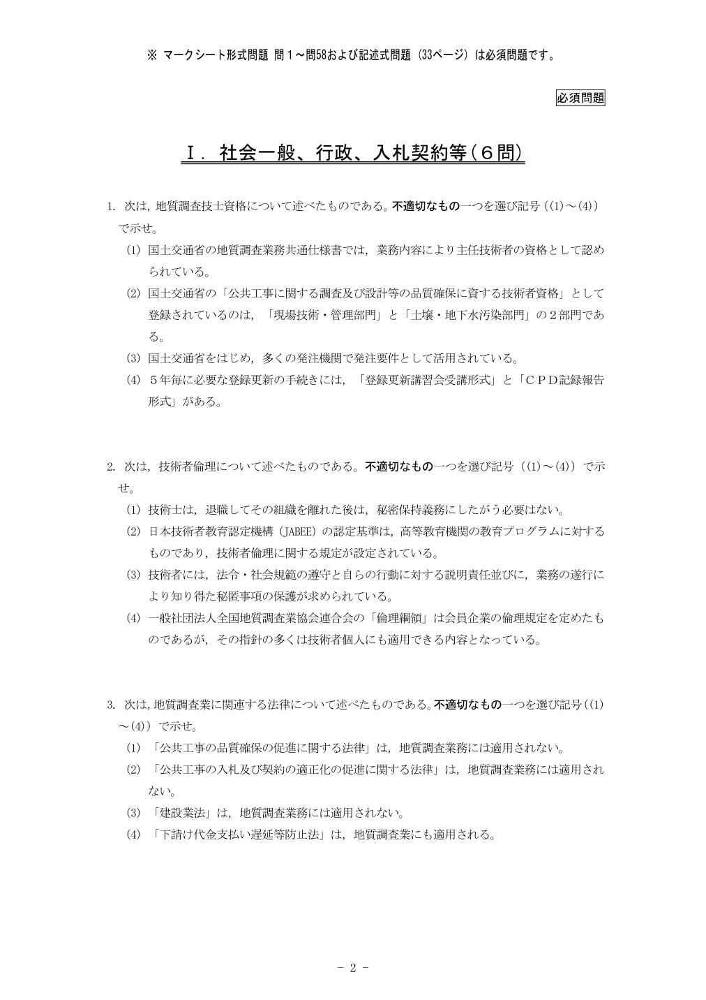
問2
必須
2. 次は，技術者倫理について述べたものである。不適切なもの一つを選び記号（(1)～(4)）で示
せ。
(1) 技術士は，退職してその組織を離れた後は，秘密保持義務にしたがう必要はない。
(2) 日本技術者教育認定機構（JABEE）の認定基準は，高等教育機関の教育プログラムに対する
ものであり，技術者倫理に関する規定が設定されている。
(3) 技術者には，法令・社会規範の遵守と自らの行動に対する説明責任並びに，業務の遂行に
より知り得た秘匿事項の保護が求められている。
(4) 一般社団法人全国地質調査業協会連合会の「倫理綱領」は会員企業の倫理規定を定めたも
のであるが，その指針の多くは技術者個人にも適用できる内容となっている。
図表・イラスト確認用：PDF紙面（2ページ）を表示
問3
必須
3. 次は，地質調査業に関連する法律について述べたものである。不適切なもの一つを選び記号（(1)
～(4)）で示せ。
(1) 「公共工事の品質確保の促進に関する法律」は，地質調査業務には適用されない。
(2) 「公共工事の入札及び契約の適正化の促進に関する法律」は，地質調査業務には適用され
ない。
(3) 「建設業法」は，地質調査業務には適用されない。
(4) 「下請け代金支払い遅延等防止法」は，地質調査業にも適用される。
- 3 -
必須問題
図表・イラスト確認用：PDF紙面（2ページ）を表示
問4
必須
4. 次は，産業廃棄物管理票（マニフェスト）について述べたものである。適切なもの一つを選び
記号（(1)～(4)）で示せ。
(1) 排出事業者は，マニフェストの交付後，定められた期限内に最終処分が終了したことを確
認しなければならない。
(2) マニフェストの交付が適切であれば，排出事業者は最終処分の終了を確認しなくともよい。
(3) 排出事業者が産業廃棄物を自ら処理する場合でも，交付は必要である。
(4) 排出事業者は，産業廃棄物を処理業者に引き渡した後にマニフェストを交付する。
図表・イラスト確認用：PDF紙面（3ページ）を表示
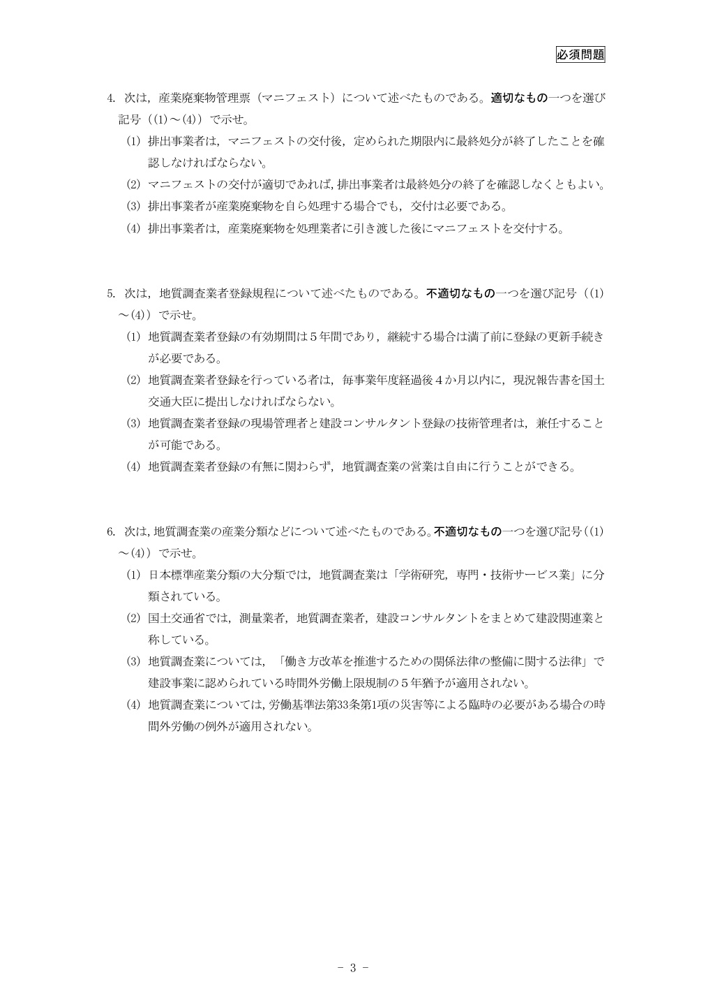
問5
必須
5. 次は，地質調査業者登録規程について述べたものである。不適切なもの一つを選び記号（(1)
～(4)）で示せ。
(1) 地質調査業者登録の有効期間は５年間であり，継続する場合は満了前に登録の更新手続き
が必要である。
(2) 地質調査業者登録を行っている者は，毎事業年度経過後４か月以内に，現況報告書を国土
交通大臣に提出しなければならない。
(3) 地質調査業者登録の現場管理者と建設コンサルタント登録の技術管理者は，兼任すること
が可能である。
(4) 地質調査業者登録の有無に関わらず，地質調査業の営業は自由に行うことができる。
図表・イラスト確認用：PDF紙面（3ページ）を表示
問6
必須
6. 次は，地質調査業の産業分類などについて述べたものである。不適切なもの一つを選び記号（(1)
～(4)）で示せ。
(1) 日本標準産業分類の大分類では，地質調査業は「学術研究，専門・技術サービス業」に分
類されている。
(2) 国土交通省では，測量業者，地質調査業者，建設コンサルタントをまとめて建設関連業と
称している。
(3) 地質調査業については，「働き方改革を推進するための関係法律の整備に関する法律」で
建設事業に認められている時間外労働上限規制の５年猶予が適用されない。
(4) 地質調査業については，労働基準法第33条第1項の災害等による臨時の必要がある場合の時
間外労働の例外が適用されない。
- 4 -
必須問題
Ⅱ．地質、測量、土木、建築等の知識(８問)
図表・イラスト確認用：PDF紙面（3ページ）を表示
問7
必須
7. 下表は，山地と平野の相違点を示したものである。空欄 Ａ ～ Ｄ に当てはまる名称
の適切な組合せ一つを選び記号（(1)～(4)）で示せ。
地形区分
山 地
平 野
地形細分
山 地
丘陵地，台地，低地
地 質
成 因
主として岩盤で構成
主として Ａ 地盤で構成
均一性
Ｂ （割れ目，亀裂）である
比較的均一である
連続性
基本的に不連続体である
ほぼ連続体である
供試体と
の相似性
Ｃ
Ｄ
構造性
異方性があり，褶曲や傾斜があ
って複雑である
大部分が水平堆積である
記号
Ａ
Ｂ
Ｃ
Ｄ
(1)
(2)
(3)
(4)
土 質
傾 斜
軟 弱
土 質
不均一
不均一
均 一
不均一
悪 い
良 い
悪 い
良 い
良 い
悪 い
良 い
無関係
図表・イラスト確認用：PDF紙面（4ページ）を表示
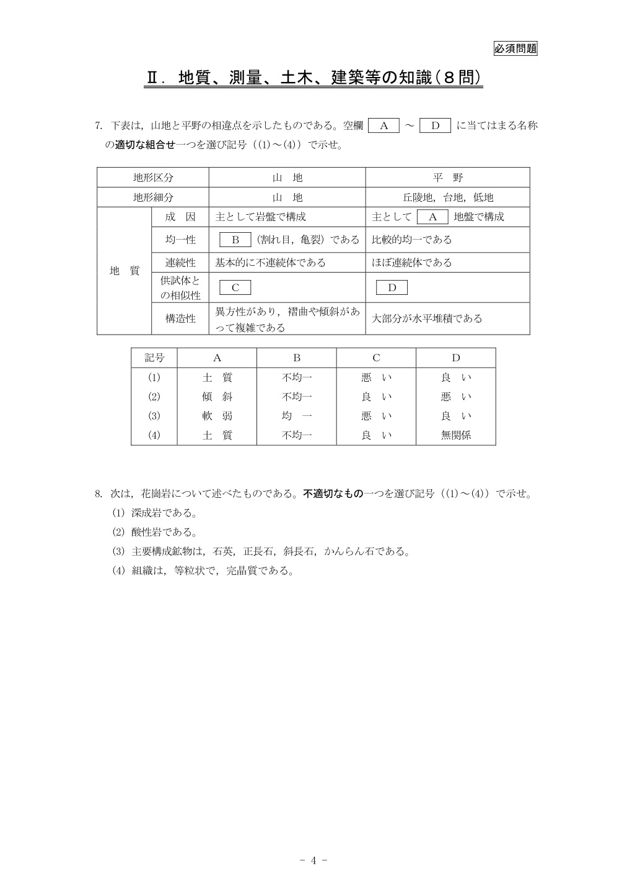
問8
必須
8. 次は，花崗岩について述べたものである。不適切なもの一つを選び記号（(1)～(4)）で示せ。
(1) 深成岩である。
(2) 酸性岩である。
(3) 主要構成鉱物は，石英，正長石，斜長石，かんらん石である。
(4) 組織は，等粒状で，完晶質である。
- 5 -
必須問題
図表・イラスト確認用：PDF紙面（4ページ）を表示
問9
必須
9. 次は，地震について述べたものである。文章中の空欄 Ａ ～ Ｃ に当てはまる語句の
適切な組合せ一つを選び記号（(1)～(4)）で示せ。
「地震の際，各地に設置された地震計の記録を用いて，地震動の初動をもたらした地震波が
どこから放射されたかを調べてみると，地球内部の一点に定まる。この点を Ａ という。
その真上の地表の点を Ｂ という。地震はある広がりをもつ領域で起こると考えられ，そ
の領域を Ｃ という。」
記号
Ａ
Ｂ
Ｃ
(1)
(2)
(3)
(4)
震 央
震 源
震 源
震 央
震 源
震 央
震 央
震 源
震源域
震源域
震源地
震源地
図表・イラスト確認用：PDF紙面（5ページ）を表示
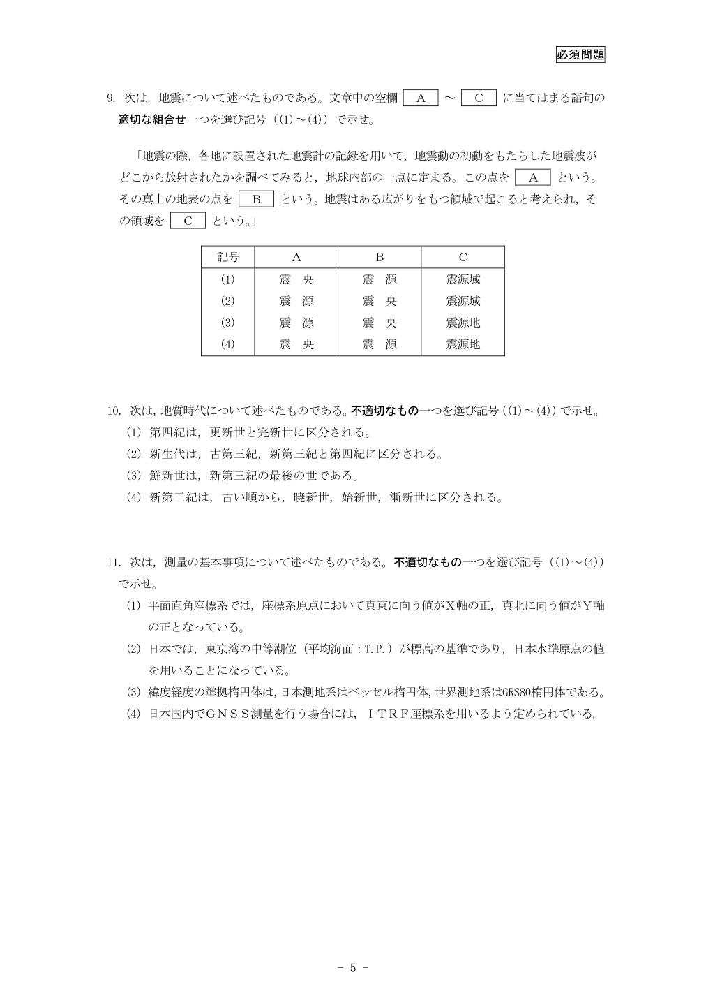
問10
必須
10. 次は，地質時代について述べたものである。不適切なもの一つを選び記号（(1)～(4)）で示せ。
(1) 第四紀は，更新世と完新世に区分される。
(2) 新生代は，古第三紀，新第三紀と第四紀に区分される。
(3) 鮮新世は，新第三紀の最後の世である。
(4) 新第三紀は，古い順から，暁新世，始新世，漸新世に区分される。
図表・イラスト確認用：PDF紙面（5ページ）を表示
問11
必須
11. 次は，測量の基本事項について述べたものである。不適切なもの一つを選び記号（(1)～(4)）
で示せ。
(1) 平面直角座標系では，座標系原点において真東に向う値がＸ軸の正，真北に向う値がＹ軸
の正となっている。
(2) 日本では，東京湾の中等潮位（平均海面：T.P.）が標高の基準であり，日本水準原点の値
を用いることになっている。
(3) 緯度経度の準拠楕円体は，日本測地系はベッセル楕円体，世界測地系はGRS80楕円体である。
(4) 日本国内でＧＮＳＳ測量を行う場合には，ＩＴＲＦ座標系を用いるよう定められている。
- 6 -
必須問題
図表・イラスト確認用：PDF紙面（5ページ）を表示
問12
必須
12. 次は，近年の測量技術について述べたものである。不適切なもの一つを選び記号（(1)～(4)）
で示せ。
(1) 国土地理院では，i-Constructionに係る測量作業に適用するために，「ＵＡＶを用いた公共
測量マニュアル（案）」などを作成し，公開している。
(2) デジタル空中写真測量では，ＧＮＳＳ/ＩＭＵシステムにより，空中写真の外部評定要素を
効率的に得ることができる。
(3) 国土地理院が制定した「マルチＧＮＳＳ測量マニュアル（案）」では，従来のL1，L2周波数
帯に加えてL5周波数帯を用いて３周波で解析することができる。
(4) 国土地理院が制定した「ＧＮＳＳ測量による標高の測量マニュアル」では，ＧＮＳＳ測量
機を用いて気象条件に左右されずに３級水準点を設置できる。
図表・イラスト確認用：PDF紙面（6ページ）を表示
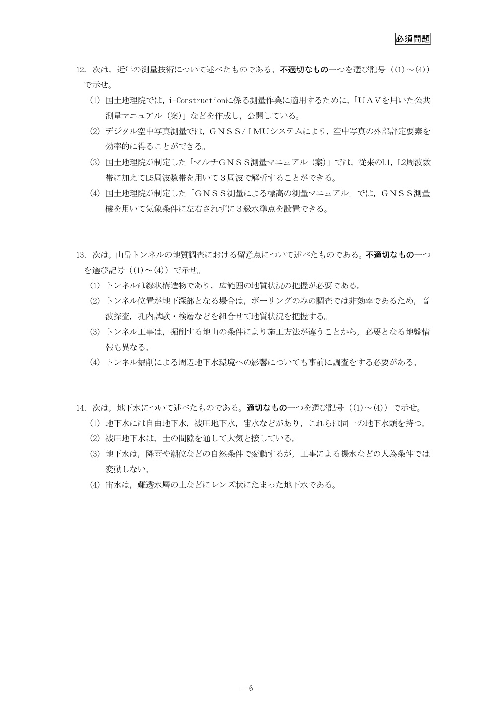
問13
必須
13. 次は，山岳トンネルの地質調査における留意点について述べたものである。不適切なもの一つ
を選び記号（(1)～(4)）で示せ。
(1) トンネルは線状構造物であり，広範囲の地質状況の把握が必要である。
(2) トンネル位置が地下深部となる場合は，ボーリングのみの調査では非効率であるため，音
波探査，孔内試験・検層などを組合せて地質状況を把握する。
(3) トンネル工事は，掘削する地山の条件により施工方法が違うことから，必要となる地盤情
報も異なる。
(4) トンネル掘削による周辺地下水環境への影響についても事前に調査をする必要がある。
図表・イラスト確認用：PDF紙面（6ページ）を表示
問14
必須
14. 次は，地下水について述べたものである。適切なもの一つを選び記号（(1)～(4)）で示せ。
(1) 地下水には自由地下水，被圧地下水，宙水などがあり，これらは同一の地下水頭を持つ。
(2) 被圧地下水は，土の間隙を通して大気と接している。
(3) 地下水は，降雨や潮位などの自然条件で変動するが，工事による揚水などの人為条件では
変動しない。
(4) 宙水は，難透水層の上などにレンズ状にたまった地下水である。
- 7 -
必須問題
Ⅲ．現場技術の知識(３２問)
図表・イラスト確認用：PDF紙面（6ページ）を表示
問15
必須
15. 次は，下図に示したボーリングマシンの巻揚装置について述べたものである。空欄 Ａ ～
Ｄ に当てはまる名称の適切な組合せ一つを選び記号（(1)～(4)）で示せ。
ホイスチングブレーキバンドでホイスチングブレーキホイルを制動させると，回転している
Ａ に固定された Ｂ により Ｃ が定位置のまま回転し，外側の Ｄ に回転
を加え，ドラムに回転動力が与えられる。
記号
Ａ
Ｂ
Ｃ
Ｄ
(1)
(2)
(3)
(4)
太陽ギヤ
ドラム軸
太陽ギヤ
ドラム軸
ドラム軸
太陽ギヤ
遊星ギヤ
インターナルギヤ
インターナルギヤ
遊星ギヤ
インターナルギヤ
遊星ギヤ
遊星ギヤ
インターナルギヤ
ドラム軸
太陽ギヤ
図表・イラスト確認用：PDF紙面（7ページ）を表示
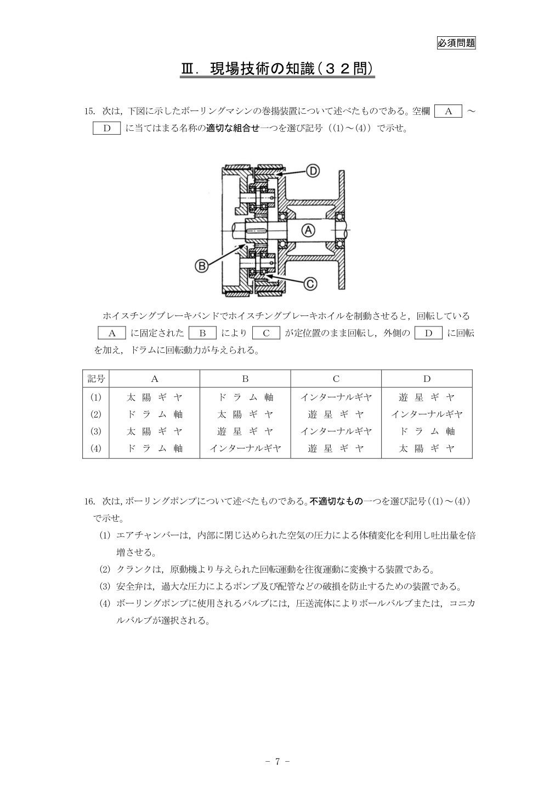
問16
必須
16. 次は，ボーリングポンプについて述べたものである。不適切なもの一つを選び記号（(1)～(4)）
で示せ。
(1) エアチャンバーは，内部に閉じ込められた空気の圧力による体積変化を利用し吐出量を倍
増させる。
(2) クランクは，原動機より与えられた回転運動を往復運動に変換する装置である。
(3) 安全弁は，過大な圧力によるポンプ及び配管などの破損を防止するための装置である。
(4) ボーリングポンプに使用されるバルブには，圧送流体によりボールバルブまたは，コニカ
ルバルブが選択される。
- 8 -
必須問題
図表・イラスト確認用：PDF紙面（7ページ）を表示
問17
必須
17. 次は，ボーリングマシンの油圧装置について述べたものである。文章中の空欄
Ａ ～ Ｄ に当てはまる語句の適切な組合せ一つを選び記号（(1)～(4)）で示せ。
Ａ により発生された圧力と量を有する油は， Ｂ により圧力・油量・方向を制
御されて各油圧アクチュエータ（油圧シリンダ・油圧チャック等）に送られる。油圧アク
チュエータの作動は，油圧が Ｃ ほど力は大きく，油量が多いほど Ｄ 作動する。
記号
Ａ
Ｂ
Ｃ
Ｄ
(1)
(2)
(3)
(4)
油圧バルブ
オイルポンプ
油圧バルブ
オイルポンプ
オイルポンプ
油圧バルブ
オイルポンプ
油圧バルブ
高 い
低 い
低 い
高 い
遅 く
早 く
遅 く
早 く
図表・イラスト確認用：PDF紙面（8ページ）を表示
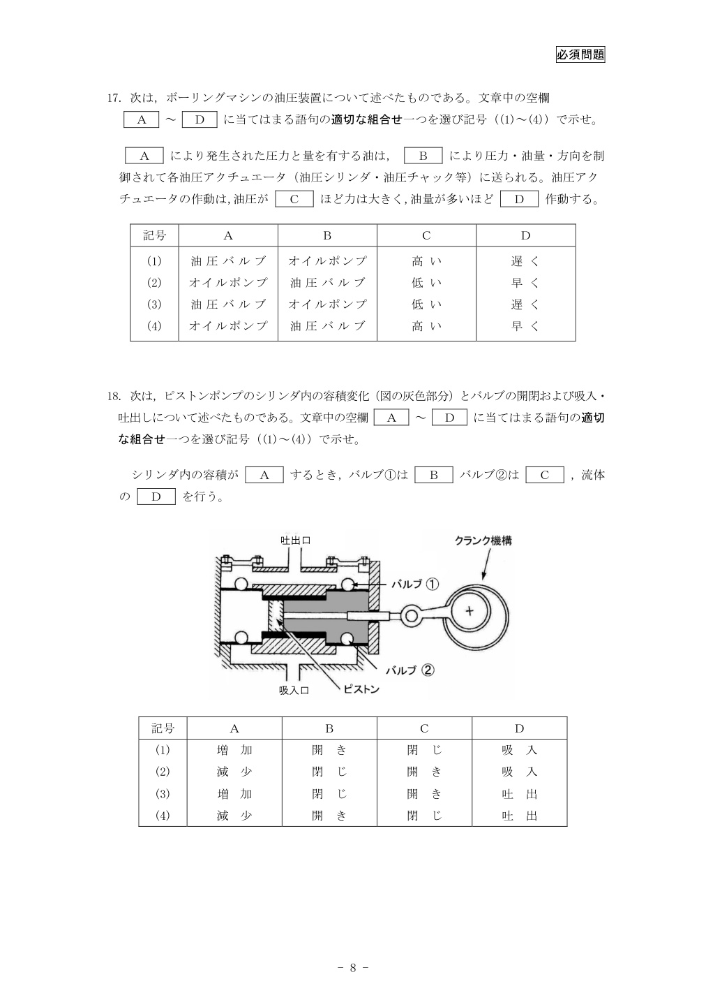
問18
必須
18. 次は，ピストンポンプのシリンダ内の容積変化（図の灰色部分）とバルブの開閉および吸入・
吐出しについて述べたものである。文章中の空欄 Ａ ～ Ｄ に当てはまる語句の適切
な組合せ一つを選び記号（(1)～(4)）で示せ。
シリンダ内の容積が Ａ するとき，バルブ①は Ｂ バルブ②は Ｃ ，流体
の Ｄ を行う。
記号
Ａ
Ｂ
Ｃ
Ｄ
(1)
(2)
(3)
(4)
増 加
減 少
増 加
減 少
開 き
閉 じ
閉 じ
開 き
閉 じ
開 き
開 き
閉 じ
吸 入
吸 入
吐 出
吐 出
吐出口
吸入口
- 9 -
必須問題
図表・イラスト確認用：PDF紙面（8ページ）を表示
問19
必須
19. 次は，ボーリングの作業計画について述べたものである。不適切なもの一つを選び記号（(1)
～(4)）で示せ。
(1) 発注者と十分な打合せを行い，調査目的に合った作業計画を立案し，機材や計測器などの
調達を行う。
(2) 衛星写真やＧＮＳＳ（ＧＰＳ）などの技術が発達した現在では，山間地などにおける運搬
路や掘削場所について，聞込みや事前の現地踏査などを行う必要がなくなった。
(3) 河川区域内や河川保全区域内でボーリング作業を行う場合，河川法に基づき河川管理者の
許可を受ける必要がある。
(4) 地下埋設物が予想される作業箇所では，埋設物の有無を管理者に確かめるなどの方法によ
り調査し，試掘等の適応する処置を講じなければならない。
図表・イラスト確認用：PDF紙面（9ページ）を表示
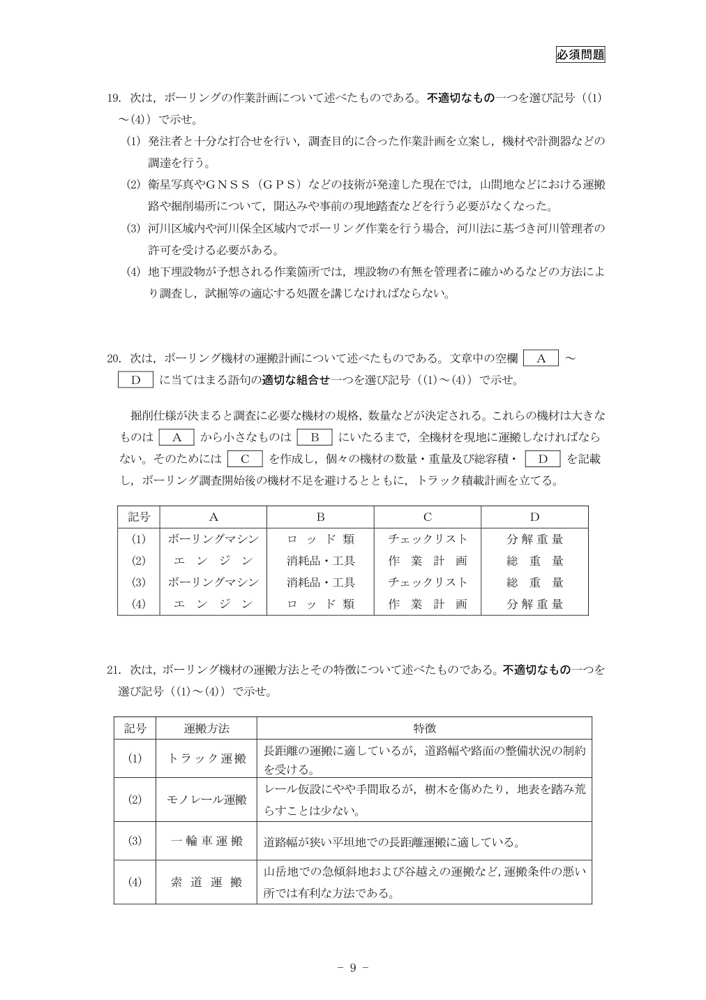
問20
必須
20. 次は，ボーリング機材の運搬計画について述べたものである。文章中の空欄 Ａ ～
Ｄ に当てはまる語句の適切な組合せ一つを選び記号（(1)～(4)）で示せ。
掘削仕様が決まると調査に必要な機材の規格，数量などが決定される。これらの機材は大きな
ものは Ａ から小さなものは Ｂ にいたるまで，全機材を現地に運搬しなければなら
ない。そのためには Ｃ を作成し，個々の機材の数量・重量及び総容積・ Ｄ を記載
し，ボーリング調査開始後の機材不足を避けるとともに，トラック積載計画を立てる。
記号
Ａ
Ｂ
Ｃ
Ｄ
(1)
(2)
(3)
(4)
ボーリングマシン
エ
ン
ジ
ン
ボーリングマシン
エ
ン
ジ
ン
ロッド類
消耗品・工具
消耗品・工具
ロッド類
チェックリスト
作
業
計
画
チェックリスト
作
業
計
画
分解重量
総
重
量
総
重
量
分解重量
図表・イラスト確認用：PDF紙面（9ページ）を表示
問21
必須
21. 次は，ボーリング機材の運搬方法とその特徴について述べたものである。不適切なもの一つを
選び記号（(1)～(4)）で示せ。
記号
運搬方法
特徴
(1)
トラック運搬
長距離の運搬に適しているが，道路幅や路面の整備状況の制約
を受ける。
(2)
モノレール運搬
レール仮設にやや手間取るが，樹木を傷めたり，地表を踏み荒
らすことは少ない。
(3)
一輪車運搬
道路幅が狭い平坦地での長距離運搬に適している。
(4)
索道運搬
山岳地での急傾斜地および谷越えの運搬など,運搬条件の悪い
所では有利な方法である。
- 10 -
必須問題
図表・イラスト確認用：PDF紙面（9ページ）を表示
問22
必須
22. 次は，鉛直ボーリングを実施する際の仮設作業について述べたものである。不適切なもの一つ
を選び記号（(1)～(4)）で示せ。
(1) ボーリングマシンの基礎は，鉛直荷重とともに，浮き上がり・転倒にも考慮した構造でな
ければならない。
(2) シングル巻き（シングルライン）の場合は，ヘッドシーブやヘッドプーリからのワイヤは
スピンドルの中心線と合致するように設置する。
(3) やぐらは鉛直荷重に耐える構造とするほか，浮き上がり・転倒についての考慮も必要である。
(4) ボーリングマシンは水平に対して５度前後の範囲で設置し，スピンドルの調整で垂直にす
る。
図表・イラスト確認用：PDF紙面（10ページ）を表示
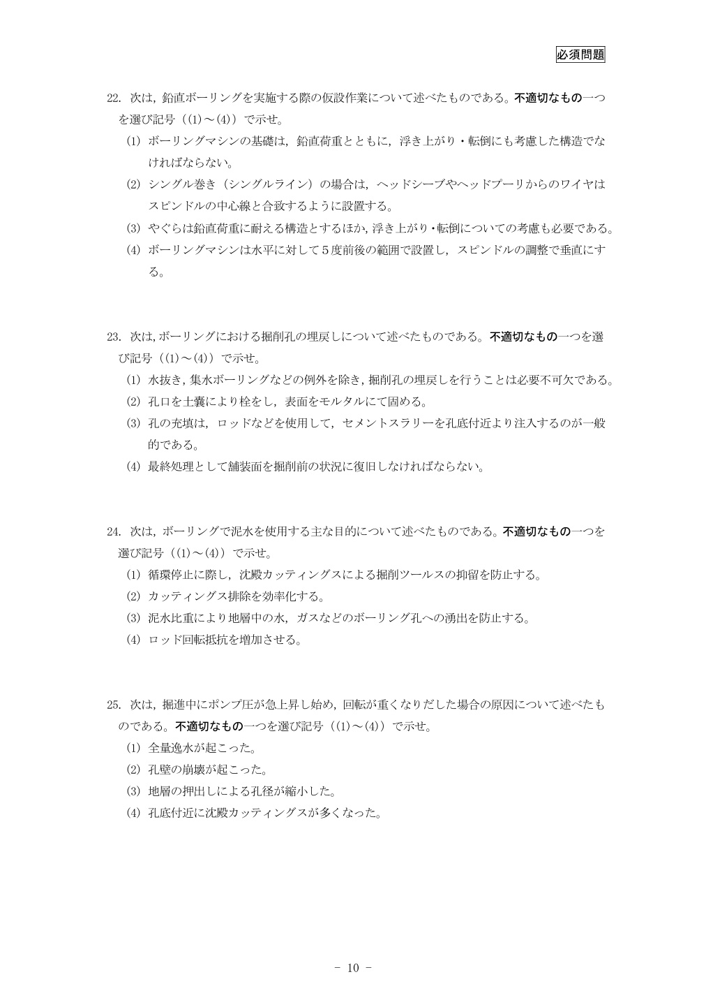
問23
必須
23. 次は,ボーリングにおける掘削孔の埋戻しについて述べたものである。不適切なもの一つを選
び記号（(1)～(4)）で示せ。
(1) 水抜き，集水ボーリングなどの例外を除き，掘削孔の埋戻しを行うことは必要不可欠である。
(2) 孔口を土嚢により栓をし，表面をモルタルにて固める。
(3) 孔の充填は，ロッドなどを使用して，セメントスラリーを孔底付近より注入するのが一般
的である。
(4) 最終処理として舗装面を掘削前の状況に復旧しなければならない。
図表・イラスト確認用：PDF紙面（10ページ）を表示
問24
必須
24. 次は，ボーリングで泥水を使用する主な目的について述べたものである。不適切なもの一つを
選び記号（(1)～(4)）で示せ。
(1) 循環停止に際し，沈殿カッティングスによる掘削ツールスの抑留を防止する。
(2) カッティングス排除を効率化する。
(3) 泥水比重により地層中の水，ガスなどのボーリング孔への湧出を防止する。
(4) ロッド回転抵抗を増加させる。
図表・イラスト確認用：PDF紙面（10ページ）を表示
問25
必須
25. 次は，掘進中にポンプ圧が急上昇し始め，回転が重くなりだした場合の原因について述べたも
のである。不適切なもの一つを選び記号（(1)～(4)）で示せ。
(1) 全量逸水が起こった。
(2) 孔壁の崩壊が起こった。
(3) 地層の押出しによる孔径が縮小した。
(4) 孔底付近に沈殿カッティングスが多くなった。
- 11 -
必須問題
図表・イラスト確認用：PDF紙面（10ページ）を表示
問26
必須
26. 次は，スリーブ内蔵二重管サンプラーにより採取された鉛直コアの取出しとコア箱への収納に
ついて述べたものである。不適切なもの一つを選び記号（(1)～(4)）で示せ。
(1) コアの取出しは，コアバレルを水平にした状態で行う。
(2) コアの取出し中に，後から出てきた部分ほど深度が浅い。
(3) 残留カッティングス部分を切除した上で，コア箱へ収納する。
(4) コア採取時の水平方位が分かるように，コア箱へ収納する。
図表・イラスト確認用：PDF紙面（11ページ）を表示
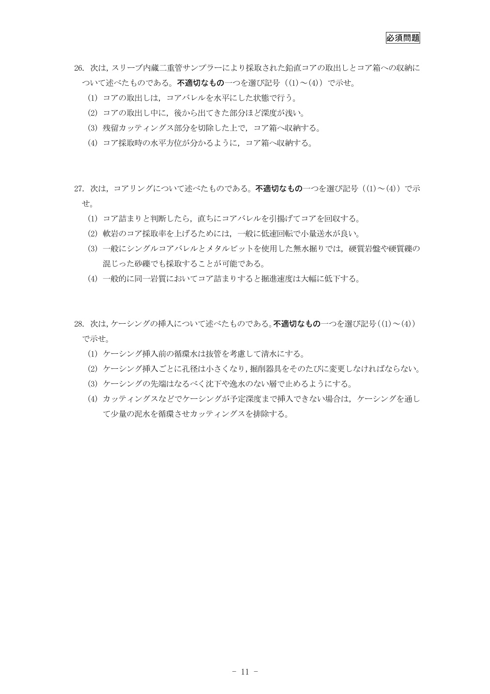
問27
必須
27. 次は，コアリングについて述べたものである。不適切なもの一つを選び記号（(1)～(4)）で示
せ。
(1) コア詰まりと判断したら，直ちにコアバレルを引揚げてコアを回収する。
(2) 軟岩のコア採取率を上げるためには，一般に低速回転で小量送水が良い。
(3) 一般にシングルコアバレルとメタルビットを使用した無水掘りでは，硬質岩盤や硬質礫の
混じった砂礫でも採取することが可能である。
(4) 一般的に同一岩質においてコア詰まりすると掘進速度は大幅に低下する。
図表・イラスト確認用：PDF紙面（11ページ）を表示
問28
必須
28. 次は，ケーシングの挿入について述べたものである。不適切なもの一つを選び記号（(1)～(4)）
で示せ。
(1) ケーシング挿入前の循環水は抜管を考慮して清水にする。
(2) ケーシング挿入ごとに孔径は小さくなり，掘削器具をそのたびに変更しなければならない。
(3) ケーシングの先端はなるべく沈下や逸水のない層で止めるようにする。
(4) カッティングスなどでケーシングが予定深度まで挿入できない場合は，ケーシングを通し
て少量の泥水を循環させカッティングスを排除する。
- 12 -
必須問題
図表・イラスト確認用：PDF紙面（11ページ）を表示
問29
必須
29. 次は，泥水調整剤の種類と品名について示した表である。表中の空欄 Ａ ～ Ｄ に
当てはまる語句や数字の適切な組合せ一つを選び記号（(1)～(4)）で示せ。
調整剤の種類
調整剤の直接的効果
Ａ
泥水比重の増加
増 粘 剤
Ｂ
分 散 剤
Ｃ
Ｄ
浸透性地盤におけるプラグ効果
図表・イラスト確認用：PDF紙面（12ページ）を表示
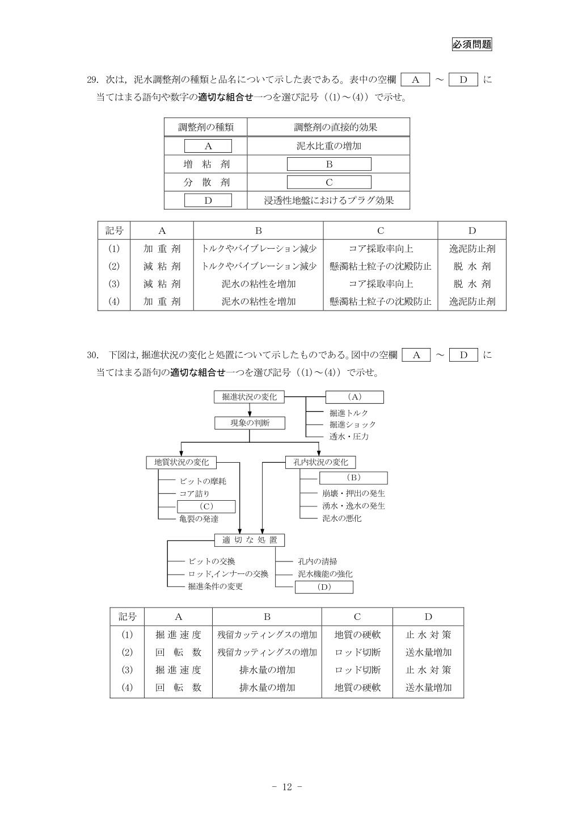
問30
必須
30. 下図は，掘進状況の変化と処置について示したものである。図中の空欄 Ａ ～ Ｄ に
当てはまる語句の適切な組合せ一つを選び記号（(1)～(4)）で示せ。
記号
Ａ
Ｂ
Ｃ
Ｄ
(1)
(2)
(3)
(4)
加 重 剤
減 粘 剤
減 粘 剤
加 重 剤
トルクやバイブレーション減少
トルクやバイブレーション減少
泥水の粘性を増加
泥水の粘性を増加
コア採取率向上
懸濁粘土粒子の沈殿防止
コア採取率向上
懸濁粘土粒子の沈殿防止
逸泥防止剤
脱 水 剤
脱 水 剤
逸泥防止剤
記号
Ａ
Ｂ
Ｃ
Ｄ
(1)
(2)
(3)
(4)
掘進速度
回
転
数
掘進速度
回
転
数
残留カッティングスの増加
残留カッティングスの増加
排水量の増加
排水量の増加
地質の硬軟
ロッド切断
ロッド切断
地質の硬軟
止水対策
送水量増加
止水対策
送水量増加
掘進状況の変化
掘進トルク
掘進ショック
透水・圧力
（Ａ）
孔内状況の変化
現象の判断
地質状況の変化
（Ｃ）
（Ｂ）
（Ｄ）
ビットの摩耗
コア詰り
亀裂の発達
崩壊・押出の発生
湧水・逸水の発生
泥水の悪化
ビットの交換
ロッド,インナーの交換
掘進条件の変更
孔内の清掃
泥水機能の強化
適 切 な 処 置
- 13 -
必須問題
図表・イラスト確認用：PDF紙面（12ページ）を表示
問31
必須
31. 次は，掘削工法技術とその説明を組合せたものである。適切な組合せ一つを選び記号（(1)～
(4)）で示せ。
記号
掘削工法技術
技術の説明
(1)
コントロールボーリング
スタビライザ法やダウンホールモータ工法は，連続的
にコアリングを行いながら孔曲げ掘削できる。
(2)
ミストボーリング
霧状の粉体を使用した掘削技術である。
(3)
エアレーテッドボーリング
逸泥が発生しないよう空気を混ぜた泥水を使用する
掘削技術である。
(4)
エアボーリング
掘削水を一切使わず孔壁を水で緩めることがないた
め，未固結層の掘削に利用される。
図表・イラスト確認用：PDF紙面（13ページ）を表示
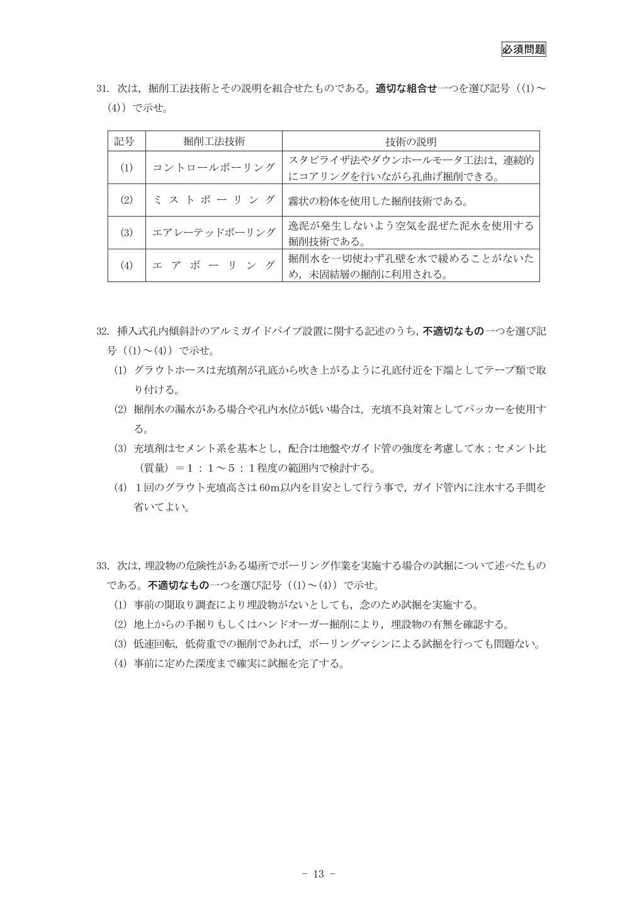
問32
必須
32. 挿入式孔内傾斜計のアルミガイドパイプ設置に関する記述のうち，不適切なもの一つを選び記
号（(1)～(4)）で示せ。
(1) グラウトホースは充填剤が孔底から吹き上がるように孔底付近を下端としてテープ類で取
り付ける。
(2) 掘削水の漏水がある場合や孔内水位が低い場合は，充填不良対策としてパッカーを使用す
る。
(3) 充填剤はセメント系を基本とし，配合は地盤やガイド管の強度を考慮して水：セメント比
（質量）＝１：１～５：１程度の範囲内で検討する。
(4) １回のグラウト充填高さは60ｍ以内を目安として行う事で，ガイド管内に注水する手間を
省いてよい。
図表・イラスト確認用：PDF紙面（13ページ）を表示
問33
必須
33. 次は，埋設物の危険性がある場所でボーリング作業を実施する場合の試掘について述べたもの
である。不適切なもの一つを選び記号（(1)～(4)）で示せ。
(1) 事前の聞取り調査により埋設物がないとしても，念のため試掘を実施する。
(2) 地上からの手掘りもしくはハンドオーガー掘削により，埋設物の有無を確認する。
(3) 低速回転，低荷重での掘削であれば，ボーリングマシンによる試掘を行っても問題ない。
(4) 事前に定めた深度まで確実に試掘を完了する。
- 14 -
必須問題
図表・イラスト確認用：PDF紙面（13ページ）を表示
問34
必須
34. 次は，サンプリング孔の掘削におけるボーリングの留意事項について述べたものである。不適
切なもの一つを選び記号（(1)～(4)）で示せ。
(1) 孔底は平坦に仕上げる必要がある。
(2) 孔底のカッティングスを排除する場合，過大な送水は孔底下の地盤を乱す原因になるので
十分注意する。
(3) 砂礫や砂の掘削後は，孔底にカッティングスが沈積しやすいので孔内清掃は綿密に行う。
(4) 循環水の濃度は，粘性土は濃く，砂質土では薄い方が良い結果を得ることができる。
図表・イラスト確認用：PDF紙面（14ページ）を表示
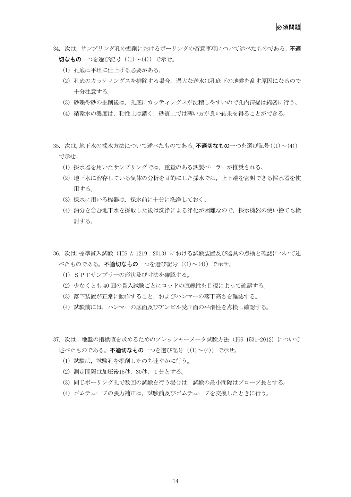
問35
必須
35. 次は，地下水の採水方法について述べたものである。不適切なもの一つを選び記号（(1)～(4)）
で示せ。
(1) 採水器を用いたサンプリングでは，重量のある鉄製ベーラーが推奨される。
(2) 地下水に溶存している気体の分析を目的にした採水では，上下端を密封できる採水器を使
用する。
(3) 採水に用いる機器は，採水前に十分に洗浄しておく。
(4) 油分を含む地下水を採取した後は洗浄による浄化が困難なので，採水機器の使い捨ても検
討する。
図表・イラスト確認用：PDF紙面（14ページ）を表示
問36
必須
36. 次は,標準貫入試験（JIS A 1219：2013）における試験装置及び器具の点検と確認について述
べたものである。不適切なもの一つを選び記号（(1)～(4)）で示せ。
(1) ＳＰＴサンプラーの形状及び寸法を確認する。
(2) 少なくとも40 回の貫入試験ごとにロッドの直線性を目視によって確認する。
(3) 落下装置が正常に動作すること，およびハンマーの落下高さを確認する。
(4) 試験前には，ハンマーの底面及びアンビル受圧面の平滑性を点検し確認する。
図表・イラスト確認用：PDF紙面（14ページ）を表示
問37
必須
37. 次は，地盤の指標値を求めるためのプレッシャーメータ試験方法（JGS 1531-2012）について
述べたものである。不適切なもの一つを選び記号（(1)～(4)）で示せ。
(1) 試験は，試験孔を掘削したのち速やかに行う。
(2) 測定間隔は加圧後15秒，30秒，１分とする。
(3) 同じボーリング孔で数回の試験を行う場合は，試験の最小間隔はプローブ長とする。
(4) ゴムチューブの張力補正は，試験前及びゴムチューブを交換したときに行う。
- 15 -
必須問題
図表・イラスト確認用：PDF紙面（14ページ）を表示
問38
必須
38. 次は，地盤の物性を評価するためのプレッシャーメータ試験方法（JGS 3531-2012）で得られ
る地盤の物性値を示したものである。適切なもの一つを選び記号（(1)～(4)）で示せ。
(1) せん断剛性率
(2) N 値
(3) せん断抵抗角
(4) 粘着力
図表・イラスト確認用：PDF紙面（15ページ）を表示
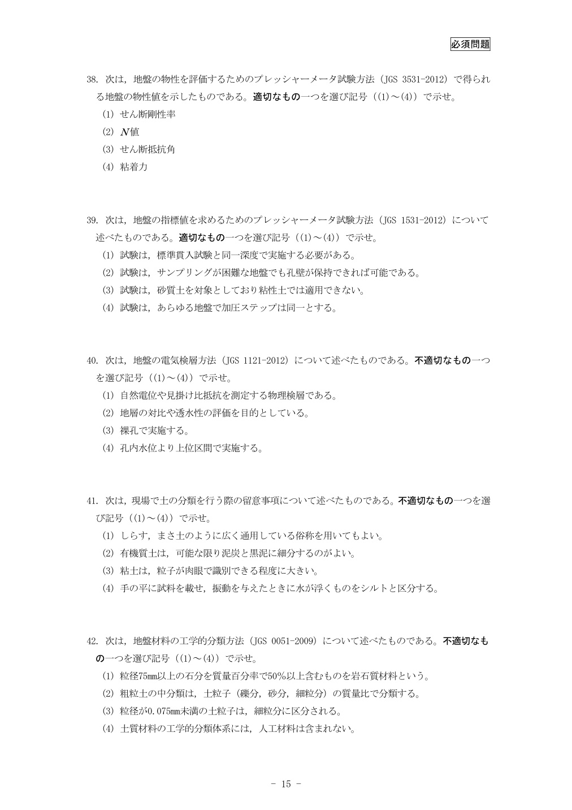
問39
必須
39. 次は，地盤の指標値を求めるためのプレッシャーメータ試験方法（JGS 1531-2012）について
述べたものである。適切なもの一つを選び記号（(1)～(4)）で示せ。
(1) 試験は，標準貫入試験と同一深度で実施する必要がある。
(2) 試験は，サンプリングが困難な地盤でも孔壁が保持できれば可能である。
(3) 試験は，砂質土を対象としており粘性土では適用できない。
(4) 試験は，あらゆる地盤で加圧ステップは同一とする。
図表・イラスト確認用：PDF紙面（15ページ）を表示
問40
必須
40. 次は，地盤の電気検層方法（JGS 1121-2012）について述べたものである。不適切なもの一つ
を選び記号（(1)～(4)）で示せ。
(1) 自然電位や見掛け比抵抗を測定する物理検層である。
(2) 地層の対比や透水性の評価を目的としている。
(3) 裸孔で実施する。
(4) 孔内水位より上位区間で実施する。
図表・イラスト確認用：PDF紙面（15ページ）を表示
問41
必須
41. 次は，現場で土の分類を行う際の留意事項について述べたものである。不適切なもの一つを選
び記号（(1)～(4)）で示せ。
(1) しらす，まさ土のように広く通用している俗称を用いてもよい。
(2) 有機質土は，可能な限り泥炭と黒泥に細分するのがよい。
(3) 粘土は，粒子が肉眼で識別できる程度に大きい。
(4) 手の平に試料を載せ，振動を与えたときに水が浮くものをシルトと区分する。
図表・イラスト確認用：PDF紙面（15ページ）を表示
問42
必須
42. 次は，地盤材料の工学的分類方法（JGS 0051-2009）について述べたものである。不適切なも
の一つを選び記号（(1)～(4)）で示せ。
(1) 粒径75mm以上の石分を質量百分率で50％以上含むものを岩石質材料という。
(2) 粗粒土の中分類は，土粒子（礫分，砂分，細粒分）の質量比で分類する。
(3) 粒径が0.075mm未満の土粒子は，細粒分に区分される。
(4) 土質材料の工学的分類体系には，人工材料は含まれない。
- 16 -
必須問題
図表・イラスト確認用：PDF紙面（15ページ）を表示
問43
必須
43. 下表は，標準貫入試験のN 値を記録したものである。打撃回数の合計と貫入量の合計との組
み合わせとして不適切なもの一つを選び記号（(1)～(4)）で示せ。
図表・イラスト確認用：PDF紙面（16ページ）を表示
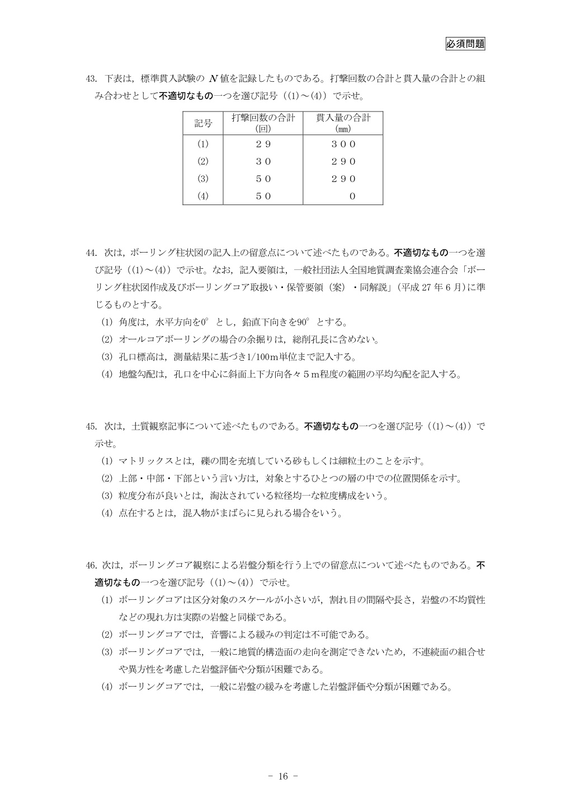
問44
必須
44. 次は，ボーリング柱状図の記入上の留意点について述べたものである。不適切なもの一つを選
び記号（(1)～(4)）で示せ。なお，記入要領は，一般社団法人全国地質調査業協会連合会「ボー
リング柱状図作成及びボーリングコア取扱い・保管要領（案）・同解説」(平成27 年6 月)に準
じるものとする。
(1) 角度は，水平方向を0°とし，鉛直下向きを90°とする。
(2) オールコアボーリングの場合の余掘りは，総削孔長に含めない。
(3) 孔口標高は，測量結果に基づき1/100ｍ単位まで記入する。
(4) 地盤勾配は，孔口を中心に斜面上下方向各々５ｍ程度の範囲の平均勾配を記入する。
図表・イラスト確認用：PDF紙面（16ページ）を表示
問45
必須
45. 次は，土質観察記事について述べたものである。不適切なもの一つを選び記号（(1)～(4)）で
示せ。
(1) マトリックスとは，礫の間を充填している砂もしくは細粒土のことを示す。
(2) 上部・中部・下部という言い方は，対象とするひとつの層の中での位置関係を示す。
(3) 粒度分布が良いとは，淘汰されている粒径均一な粒度構成をいう。
(4) 点在するとは，混入物がまばらに見られる場合をいう。
図表・イラスト確認用：PDF紙面（16ページ）を表示
問46
必須
46. 次は，ボーリングコア観察による岩盤分類を行う上での留意点について述べたものである。不
適切なもの一つを選び記号（(1)～(4)）で示せ。
(1) ボーリングコアは区分対象のスケールが小さいが，割れ目の間隔や長さ，岩盤の不均質性
などの現れ方は実際の岩盤と同様である。
(2) ボーリングコアでは，音響による緩みの判定は不可能である。
(3) ボーリングコアでは，一般に地質的構造面の走向を測定できないため，不連続面の組合せ
や異方性を考慮した岩盤評価や分類が困難である。
(4) ボーリングコアでは，一般に岩盤の緩みを考慮した岩盤評価や分類が困難である。
記号
打撃回数の合計
(回)
貫入量の合計
(mm)
(1)
(2)
(3)
(4)
２９
３０
５０
５０
３００
２９０
２９０
０
- 17 -
必須問題
Ⅳ．調査技術の理解度(４問)
図表・イラスト確認用：PDF紙面（16ページ）を表示
問47
必須
47. 次は，屈折法地震探査（弾性波探査）について述べたものである。不適切なもの一つを選び記
号（(1)～(4)）で示せ。
(1) 解析ソフトの導入により，どのような条件でも遠隔起振は不要となった。
(2) 弾性波速度のみでは，地質の違いを区分することはできない。
(3) 各層の速度は，深部ほど大きいことが速度層解析の前提となっている。
(4) 測線両端の起振だけでは速度構造を正確に解析できない。
図表・イラスト確認用：PDF紙面（17ページ）を表示
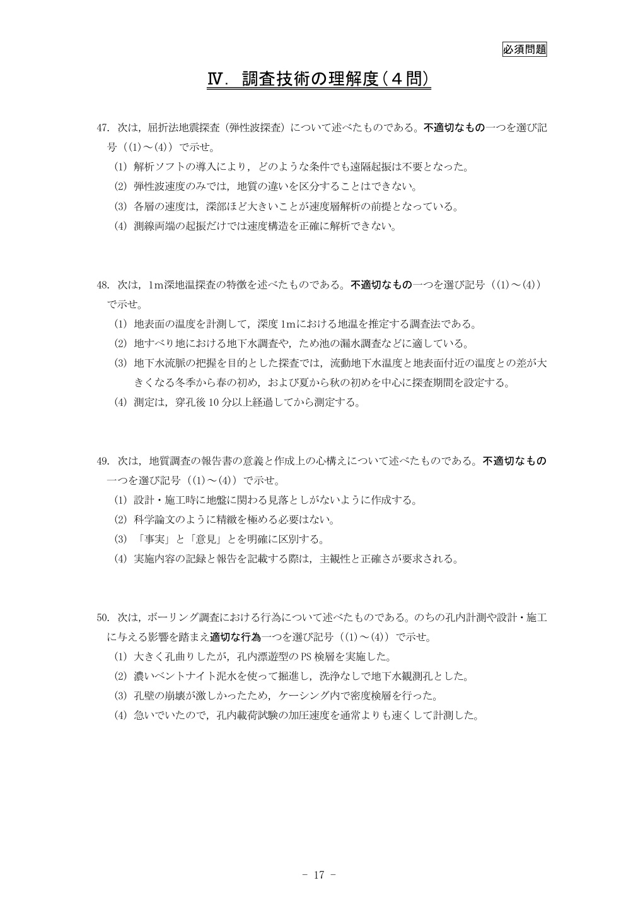
問48
必須
48. 次は，1ｍ深地温探査の特徴を述べたものである。不適切なもの一つを選び記号（(1)～(4)）
で示せ。
(1) 地表面の温度を計測して，深度1ｍにおける地温を推定する調査法である。
(2) 地すべり地における地下水調査や，ため池の漏水調査などに適している。
(3) 地下水流脈の把握を目的とした探査では，流動地下水温度と地表面付近の温度との差が大
きくなる冬季から春の初め，および夏から秋の初めを中心に探査期間を設定する。
(4) 測定は，穿孔後10 分以上経過してから測定する。
図表・イラスト確認用：PDF紙面（17ページ）を表示
問49
必須
49. 次は，地質調査の報告書の意義と作成上の心構えについて述べたものである。不適切なもの
一つを選び記号（(1)～(4)）で示せ。
(1) 設計・施工時に地盤に関わる見落としがないように作成する。
(2) 科学論文のように精緻を極める必要はない。
(3) 「事実」と「意見」とを明確に区別する。
(4) 実施内容の記録と報告を記載する際は，主観性と正確さが要求される。
図表・イラスト確認用：PDF紙面（17ページ）を表示
問50
必須
50. 次は，ボーリング調査における行為について述べたものである。のちの孔内計測や設計・施工
に与える影響を踏まえ適切な行為一つを選び記号（(1)～(4)）で示せ。
(1) 大きく孔曲りしたが，孔内漂遊型のPS 検層を実施した。
(2) 濃いベントナイト泥水を使って掘進し，洗浄なしで地下水観測孔とした。
(3) 孔壁の崩壊が激しかったため，ケーシング内で密度検層を行った。
(4) 急いでいたので，孔内載荷試験の加圧速度を通常よりも速くして計測した。
- 18 -
必須問題
Ⅴ．管理技法(８問)
図表・イラスト確認用：PDF紙面（17ページ）を表示
問51
必須
51. 次は，労働安全衛生規則で定められている特別教育が必要な作業を示したものである。不適切
なもの一つを選び記号（(1)～(4)）で示せ。
(1) 10kN 以下の不整地運搬車の運転
(2) ガス溶接
(3) 10kN 未満の移動式クレーン運転
(4) 高さ２ｍ以上の足場の組立て，解体等の作業
図表・イラスト確認用：PDF紙面（18ページ）を表示
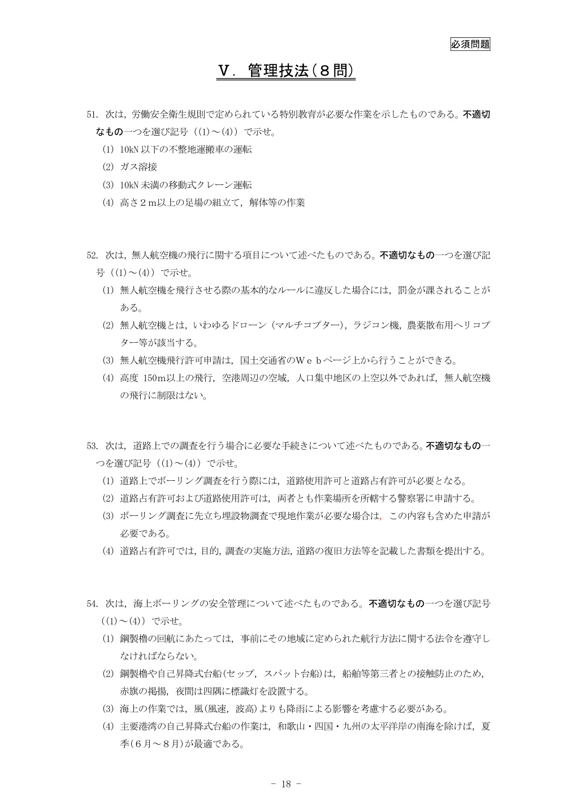
問52
必須
52. 次は，無人航空機の飛行に関する項目について述べたものである。不適切なもの一つを選び記
号（(1)～(4)）で示せ。
(1) 無人航空機を飛行させる際の基本的なルールに違反した場合には，罰金が課されることが
ある。
(2) 無人航空機とは，いわゆるドローン（マルチコプター），ラジコン機，農薬散布用ヘリコプ
ター等が該当する。
(3) 無人航空機飛行許可申請は，国土交通省のＷｅｂページ上から行うことができる。
(4) 高度150ｍ以上の飛行，空港周辺の空域，人口集中地区の上空以外であれば，無人航空機
の飛行に制限はない。
図表・イラスト確認用：PDF紙面（18ページ）を表示
問53
必須
53. 次は, 道路上での調査を行う場合に必要な手続きについて述べたものである。不適切なもの一
つを選び記号（(1)～(4)）で示せ。
(1) 道路上でボーリング調査を行う際には，道路使用許可と道路占有許可が必要となる。
(2) 道路占有許可および道路使用許可は，両者とも作業場所を所轄する警察署に申請する。
(3) ボーリング調査に先立ち埋設物調査で現地作業が必要な場合は，この内容も含めた申請が
必要である。
(4) 道路占有許可では，目的，調査の実施方法，道路の復旧方法等を記載した書類を提出する。
図表・イラスト確認用：PDF紙面（18ページ）を表示
問54
必須
54. 次は，海上ボーリングの安全管理について述べたものである。不適切なもの一つを選び記号
（(1)～(4)）で示せ。
(1) 鋼製櫓の回航にあたっては，事前にその地域に定められた航行方法に関する法令を遵守し
なければならない。
(2) 鋼製櫓や自己昇降式台船(セップ，スパット台船)は，船舶等第三者との接触防止のため，
赤旗の掲揚，夜間は四隅に標識灯を設置する。
(3) 海上の作業では，風(風速，波高)よりも降雨による影響を考慮する必要がある。
(4) 主要港湾の自己昇降式台船の作業は，和歌山・四国・九州の太平洋岸の南海を除けば，夏
季(６月～８月)が最適である。
- 19 -
必須問題
図表・イラスト確認用：PDF紙面（18ページ）を表示
問55
必須
55. 次は，ボーリング作業の安全管理について述べたものである。不適切なもの一つを選び記号
（(1)～(4)）で示せ。
(1) ワイヤロープを最も繰り出した場合でも，胴巻きに２巻以上残るようにする。
(2) ロッドを吊上げた後，巻揚機に荷重をかけたまま保持するのが最も安全な方法である。
(3) フルハーネス型安全帯（墜落制止用器具）の着用は，2019 年2 月1 日から施行になったが，
2022 年1 月1 日まで経過措置(猶予期間)がある。
(4) ボーリングマシンに多用される回転トルクは0.4～4kN・ｍ程度のものでも，回転部に起因
する事故は，死亡事故や重大な災害になる。
図表・イラスト確認用：PDF紙面（19ページ）を表示
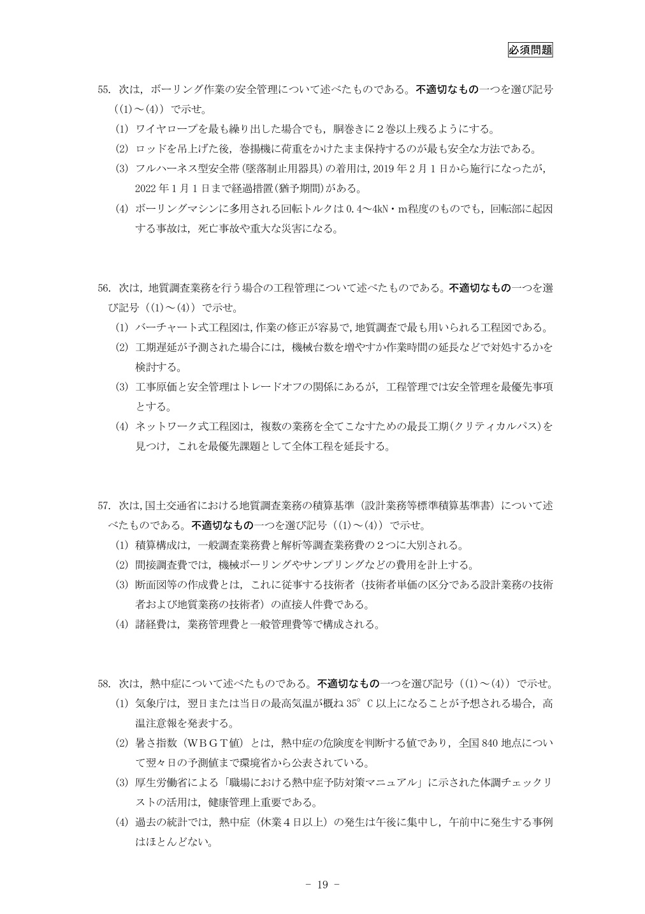
問56
必須
56. 次は，地質調査業務を行う場合の工程管理について述べたものである。不適切なもの一つを選
び記号（(1)～(4)）で示せ。
(1) バーチャート式工程図は，作業の修正が容易で，地質調査で最も用いられる工程図である。
(2) 工期遅延が予測された場合には，機械台数を増やすか作業時間の延長などで対処するかを
検討する。
(3) 工事原価と安全管理はトレードオフの関係にあるが，工程管理では安全管理を最優先事項
とする。
(4) ネットワーク式工程図は，複数の業務を全てこなすための最長工期(クリティカルパス)を
見つけ，これを最優先課題として全体工程を延長する。
図表・イラスト確認用：PDF紙面（19ページ）を表示
問57
必須
57. 次は,国土交通省における地質調査業務の積算基準（設計業務等標準積算基準書）について述
べたものである。不適切なもの一つを選び記号（(1)～(4)）で示せ。
(1) 積算構成は，一般調査業務費と解析等調査業務費の２つに大別される。
(2) 間接調査費では，機械ボーリングやサンプリングなどの費用を計上する。
(3) 断面図等の作成費とは，これに従事する技術者（技術者単価の区分である設計業務の技術
者および地質業務の技術者）の直接人件費である。
(4) 諸経費は，業務管理費と一般管理費等で構成される。
図表・イラスト確認用：PDF紙面（19ページ）を表示
問58
必須
58. 次は，熱中症について述べたものである。不適切なもの一つを選び記号（(1)～(4)）で示せ。
(1) 気象庁は，翌日または当日の最高気温が概ね35°C 以上になることが予想される場合，高
温注意報を発表する。
(2) 暑さ指数（ＷＢＧＴ値）とは，熱中症の危険度を判断する値であり，全国840 地点につい
て翌々日の予測値まで環境省から公表されている。
(3) 厚生労働省による「職場における熱中症予防対策マニュアル」に示された体調チェックリ
ストの活用は，健康管理上重要である。
(4) 過去の統計では，熱中症（休業４日以上）の発生は午後に集中し，午前中に発生する事例
はほとんどない。
- 20 -
選択問題
Ⅵ．選 択 問 題
問59から問102は、選択問題である。
以下のＡ群またはＢ群のいずれか一方を任意選択の上、解答すること。
選択問題Ａ群： 22 問（主に土質に関連した分野；問59～問80）
選択問題Ｂ群： 22 問（主に岩盤に関連した分野；問81～問102）
※Ａ群、Ｂ群の選択は、受験願書で選択記載した主な調査対象「土質」、「岩盤」の
いずれかに関わらず、任意で選択することができる。
※Ａ群およびＢ群の両方を解答している場合、選択問題の採点は行わない。
解答用紙への記入の際は、注意して記入すること。
- 21 -
選択問題 Ａ群
選択問題Ａ群：22問（主に土質に関連した分野；問59～問80）
現場技術の知識 １８問、調査技術の理解度 ４問
図表・イラスト確認用：PDF紙面（19ページ）を表示
問59
A群（土質）
59. 次は，ボーリングに用いられるビットについて述べたものである。不適切なもの一つを選び記
号（(1)～(4)）で示せ。
(1) ビットには大別して，コアを必要とする場合に用いるコアビットと，コアを必要としない
場合に用いるノンコアビットがある。
(2) コアを必要としない場合でも，地質によってはコアビットを用いて掘削したほうが掘削速
度は速く，経済的な場合がある。
(3) ノンコアビットには，トリコンビット，ウイングビット，クロスビット，フィッシュテイ
ルビット，メタルクラウンなどがある。
(4) ダイヤモンドビットには，サーフェスセットビットとインプリグネイテッドビットがある。
図表・イラスト確認用：PDF紙面（21ページ）を表示
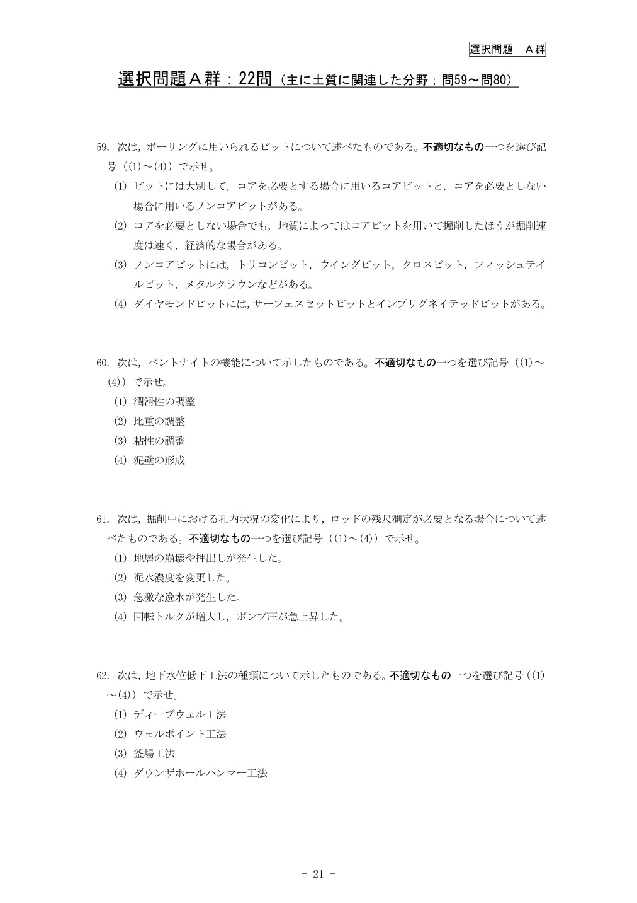
問60
A群（土質）
60. 次は，ベントナイトの機能について示したものである。不適切なもの一つを選び記号（(1)～
(4)）で示せ。
(1) 潤滑性の調整
(2) 比重の調整
(3) 粘性の調整
(4) 泥壁の形成
図表・イラスト確認用：PDF紙面（21ページ）を表示
問61
A群（土質）
61. 次は，掘削中における孔内状況の変化により，ロッドの残尺測定が必要となる場合について述
べたものである。不適切なもの一つを選び記号（(1)～(4)）で示せ。
(1) 地層の崩壊や押出しが発生した。
(2) 泥水濃度を変更した。
(3) 急激な逸水が発生した。
(4) 回転トルクが増大し，ポンプ圧が急上昇した。
図表・イラスト確認用：PDF紙面（21ページ）を表示
問62
A群（土質）
62. 次は，地下水位低下工法の種類について示したものである。不適切なもの一つを選び記号（(1)
～(4)）で示せ。
(1) ディープウェル工法
(2) ウェルポイント工法
(3) 釜場工法
(4) ダウンザホールハンマー工法
- 22 -
選択問題 Ａ群
図表・イラスト確認用：PDF紙面（21ページ）を表示
問63
A群（土質）
63．次は，軟弱地盤上への盛土施工における動態観測を目的に，ボーリング孔内へ設置される計器
の種類について示したものである。不適切なもの一つを選び記号（(1)～(4)）で示せ。
(1) 層別沈下計
(2) 地表面沈下板
(3) 地中変位計
(4) 電気式間隙水圧計
図表・イラスト確認用：PDF紙面（22ページ）を表示
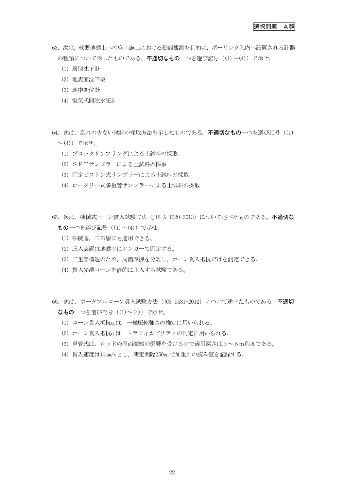
問64
A群（土質）
64. 次は，乱れの少ない試料の採取方法を示したものである。不適切なもの一つを選び記号（(1)
～(4)）で示せ。
(1) ブロックサンプリングによる土試料の採取
(2) ＳＰＴサンプラーによる土試料の採取
(3) 固定ピストン式サンプラーによる土試料の採取
(4) ロータリー式多重管サンプラーによる土試料の採取
図表・イラスト確認用：PDF紙面（22ページ）を表示
問65
A群（土質）
65．次は，機械式コーン貫入試験方法（JIS A 1220:2013）について述べたものである。不適切な
もの一つを選び記号（(1)～(4)）で示せ。
(1) 砂礫層，玉石層にも適用できる。
(2) 圧入装置は地盤中にアンカーで固定する。
(3) 二重管構造のため，周面摩擦を分離し，コーン貫入抵抗だけを測定できる。
(4) 貫入先端コーンを静的に圧入する試験である。
図表・イラスト確認用：PDF紙面（22ページ）を表示
問66
A群（土質）
66. 次は，ポータブルコーン貫入試験方法（JGS 1431-2012）について述べたものである。不適切
なもの一つを選び記号（(1)～(4)）で示せ。
(1) コーン貫入抵抗qcは，一軸圧縮強さの推定に用いられる。
(2) コーン貫入抵抗qcは，トラフィカビリティの判定に用いられる。
(3) 単管式は，ロッドの周面摩擦の影響を受けるので適用深さは３～５ｍ程度である。
(4) 貫入速度は10mm/sとし，測定間隔250mmで加重計の読み値を記録する。
- 23 -
選択問題 Ａ群
図表・イラスト確認用：PDF紙面（22ページ）を表示
問67
A群（土質）
67. 次は，ボーリング孔内に設置した電気式間隙水圧計による間隙水圧の測定方法（JGS 1313-2012）
について述べたものである。不適切なもの一つを選び記号（(1)～(4)）で示せ。
(1) 測定の適用範囲は，地下水面より下方の飽和された地盤である。
(2) 押込みにより設置する場合は，押込み時の過剰間隙水圧の発生に留意する必要がある。
(3) フィルターを間隙水圧計本体に取付ける場合は，水中で取付け作業を行う。
(4) 埋戻しにより設置する場合は，ベントナイトで間隙水圧計本体を埋戻す。
図表・イラスト確認用：PDF紙面（23ページ）を表示
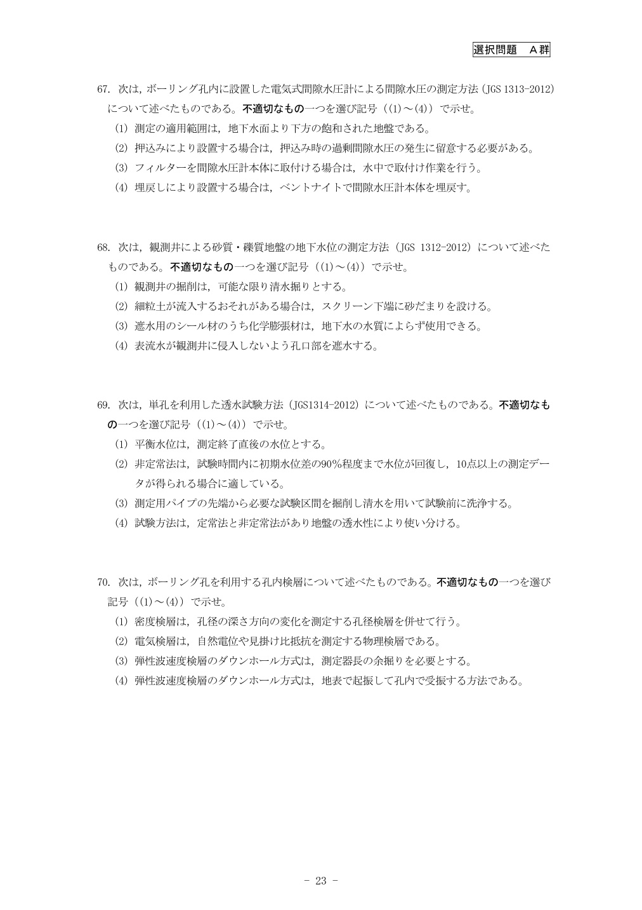
問68
A群（土質）
68. 次は，観測井による砂質・礫質地盤の地下水位の測定方法（JGS 1312-2012）について述べた
ものである。不適切なもの一つを選び記号（(1)～(4)）で示せ。
(1) 観測井の掘削は，可能な限り清水掘りとする。
(2) 細粒土が流入するおそれがある場合は，スクリーン下端に砂だまりを設ける。
(3) 遮水用のシール材のうち化学膨張材は，地下水の水質によらず使用できる。
(4) 表流水が観測井に侵入しないよう孔口部を遮水する。
図表・イラスト確認用：PDF紙面（23ページ）を表示
問69
A群（土質）
69. 次は，単孔を利用した透水試験方法（JGS1314-2012）について述べたものである。不適切なも
の一つを選び記号（(1)～(4)）で示せ。
(1) 平衡水位は，測定終了直後の水位とする。
(2) 非定常法は，試験時間内に初期水位差の90％程度まで水位が回復し，10点以上の測定デー
タが得られる場合に適している。
(3) 測定用パイプの先端から必要な試験区間を掘削し清水を用いて試験前に洗浄する。
(4) 試験方法は，定常法と非定常法があり地盤の透水性により使い分ける。
図表・イラスト確認用：PDF紙面（23ページ）を表示
問70
A群（土質）
70. 次は，ボーリング孔を利用する孔内検層について述べたものである。不適切なもの一つを選び
記号（(1)～(4)）で示せ。
(1) 密度検層は，孔径の深さ方向の変化を測定する孔径検層を併せて行う。
(2) 電気検層は，自然電位や見掛け比抵抗を測定する物理検層である。
(3) 弾性波速度検層のダウンホール方式は，測定器長の余掘りを必要とする。
(4) 弾性波速度検層のダウンホール方式は，地表で起振して孔内で受振する方法である。
- 24 -
選択問題 Ａ群
図表・イラスト確認用：PDF紙面（23ページ）を表示
問71
A群（土質）
71. 下図は，細粒土の工学的分類体系を説明したものである。空欄 Ａ ～ Ｄ に当ては
まる語句の適切な組合せ一つを選び記号（(1)～(4)）で示せ。
図表・イラスト確認用：PDF紙面（24ページ）を表示
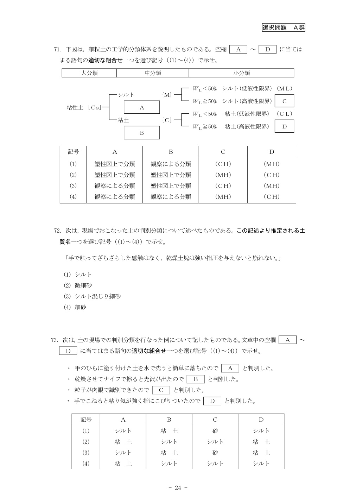
問72
A群（土質）
72. 次は，現場でおこなった土の判別分類について述べたものである。この記述より推定される土
質名一つを選び記号（(1)～(4)）で示せ。
「手で触ってざらざらした感触はなく，乾燥土塊は強い指圧を与えないと崩れない。」
(1) シルト
(2) 微細砂
(3) シルト混じり細砂
(4) 細砂
図表・イラスト確認用：PDF紙面（24ページ）を表示
問73
A群（土質）
73. 次は，土の現場での判別分類を行なった例について記したものである。文章中の空欄 Ａ ～
Ｄ に当てはまる語句の適切な組合せ一つを選び記号（(1)～(4)）で示せ。
・ 手のひらに塗り付けた土を水で洗うと簡単に落ちたので Ａ と判別した。
・ 乾燥させてナイフで擦ると光沢が出たので Ｂ と判別した。
・ 粒子が肉眼で識別できたので Ｃ と判別した。
・ 手でこねると粘り気が強く指にこびりついたので Ｄ と判別した。
記号
Ａ
Ｂ
Ｃ
Ｄ
（1）
（2）
（3）
（4）
シルト
粘 土
シルト
粘 土
粘 土
シルト
粘 土
シルト
砂
シルト
砂
シルト
シルト
粘 土
粘 土
シルト
大分類
小分類
ＷＬ＜50%
シルト(低液性限界) (ＭＬ)
{Ｍ}
ＷＬ≧50%
シルト(高液性限界)
粘性土[Ｃs]
ＷＬ＜50%
粘土(低液性限界)
(ＣＬ)
{Ｃ}
ＷＬ≧50%
粘土(高液性限界)
Ｄ
中分類
シルト
粘土
Ａ
Ｂ
Ｃ
記号
Ａ
Ｂ
Ｃ
Ｄ
(1)
(2)
(3)
(4)
塑性図上で分類
塑性図上で分類
観察による分類
観察による分類
観察による分類
塑性図上で分類
塑性図上で分類
観察による分類
(ＣＨ)
(ＭＨ)
(ＣＨ)
(ＭＨ)
(ＭＨ)
(ＣＨ)
(ＭＨ)
(ＣＨ)
- 25 -
選択問題 Ａ群
図表・イラスト確認用：PDF紙面（24ページ）を表示
問74
A群（土質）
74. 下表は，N 値の記入要領について述べたものである。不適切なもの一つを選び記号（(1)～(4)）
で示せ。
(1) 打撃１回ごとの貫入量が100mmを超える場合は，その貫入量を記録する。
(2) ロッドとサンプラーの自重だけで自沈した場合，ハンマー自沈と観察記事欄に記入する。
(3）調査目的などを踏まえて，打撃回数の記録を貫入量50mmごとに行ってもよい。
(4) サンプラーの先端が玉石や転石等にあたって貫入しない場合は，貫入不能と記す。
図表・イラスト確認用：PDF紙面（25ページ）を表示
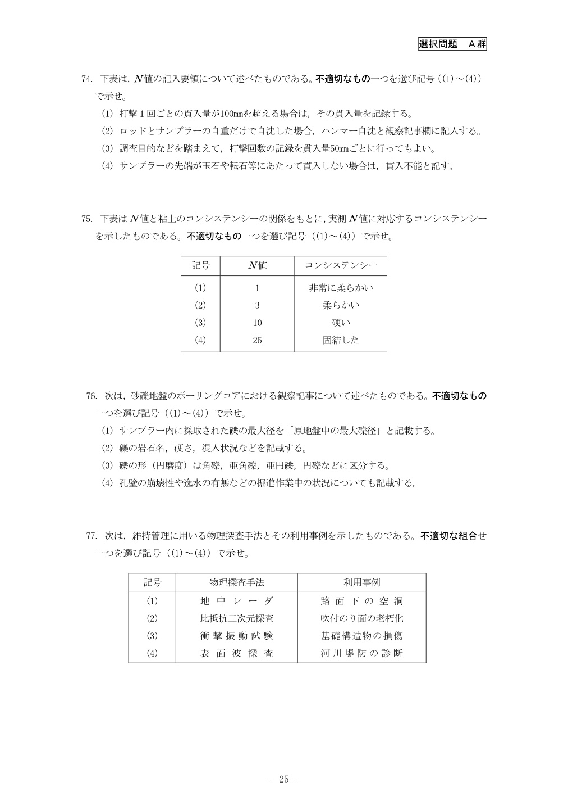
問75
A群（土質）
75. 下表はN 値と粘土のコンシステンシーの関係をもとに，実測N 値に対応するコンシステンシー
を示したものである。不適切なもの一つを選び記号（(1)～(4)）で示せ。
記号
N 値
コンシステンシー
(1)
(2)
(3)
(4)
1
3
10
25
非常に柔らかい
柔らかい
硬い
固結した
図表・イラスト確認用：PDF紙面（25ページ）を表示
問76
A群（土質）
76. 次は，砂礫地盤のボーリングコアにおける観察記事について述べたものである。不適切なもの
一つを選び記号（(1)～(4)）で示せ。
(1) サンプラー内に採取された礫の最大径を「原地盤中の最大礫径」と記載する。
(2) 礫の岩石名，硬さ，混入状況などを記載する。
(3) 礫の形（円磨度）は角礫，亜角礫，亜円礫，円礫などに区分する。
(4) 孔壁の崩壊性や逸水の有無などの掘進作業中の状況についても記載する。
図表・イラスト確認用：PDF紙面（25ページ）を表示
問77
A群（土質）
77. 次は，維持管理に用いる物理探査手法とその利用事例を示したものである。不適切な組合せ
一つを選び記号（(1)～(4)）で示せ。
記号
物理探査手法
利用事例
(1)
(2)
(3)
(4)
地中レーダ
比抵抗二次元探査
衝撃振動試験
表面波探査
路面下の空洞
吹付のり面の老朽化
基礎構造物の損傷
河川堤防の診断
- 26 -
選択問題 Ａ群
図表・イラスト確認用：PDF紙面（25ページ）を表示
問78
A群（土質）
78. 次は，海上ボーリング調査の安全に関する事項について述べたものである。不適切なもの一
つを選び記号（(1)～(4)）で示せ。
(1) 作業足場の高さは潮位，波高に対して十分安全な余裕高を確保する。
(2) 乗船や下船は，波の一番高い位置で行う。
(3) 船舶での作業は，必ずボーリング機長の指示に従う。
(4) 不発弾の残存のおそれがある場合は，ボーリング作業前に磁気探査で確認する必要がある。
図表・イラスト確認用：PDF紙面（26ページ）を表示
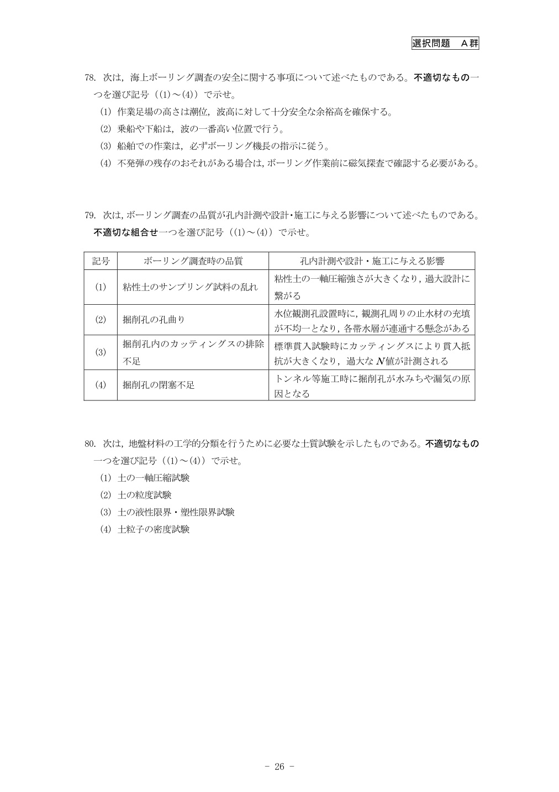
問79
A群（土質）
79. 次は，ボーリング調査の品質が孔内計測や設計・施工に与える影響について述べたものである。
不適切な組合せ一つを選び記号（(1)～(4)）で示せ。
記号
ボーリング調査時の品質
孔内計測や設計・施工に与える影響
(1)
粘性土のサンプリング試料の乱れ
粘性土の一軸圧縮強さが大きくなり，過大設計に
繋がる
(2)
掘削孔の孔曲り
水位観測孔設置時に，観測孔周りの止水材の充填
が不均一となり，各帯水層が連通する懸念がある
(3)
掘削孔内のカッティングスの排除
不足
標準貫入試験時にカッティングスにより貫入抵
抗が大きくなり，過大なN 値が計測される
(4)
掘削孔の閉塞不足
トンネル等施工時に掘削孔が水みちや漏気の原
因となる
図表・イラスト確認用：PDF紙面（26ページ）を表示
問80
A群（土質）
80. 次は，地盤材料の工学的分類を行うために必要な土質試験を示したものである。不適切なもの
一つを選び記号（(1)～(4)）で示せ。
(1) 土の一軸圧縮試験
(2) 土の粒度試験
(3) 土の液性限界・塑性限界試験
(4) 土粒子の密度試験
- 27 -
選択問題 Ｂ群
選択問題Ｂ群：22問（主に岩盤に関連した分野；問81～問102）
現場技術の知識 １８問、調査技術の理解度 ４問
図表・イラスト確認用：PDF紙面（26ページ）を表示
問81
B群（岩盤）
81. 次は，岩盤ボーリングに使用されるインプリグネイティッドダイヤモンドビットのウォータウ
ェイの大きさについて述べたものである。不適切なもの一つを選び記号（(1)～(4)）で示せ。
(1) 大きい場合は，ビットの強度が増加する。
(2) 小さい場合は，十分な掘削流体を送れない。
(3) 小さい場合は，ビットの冷却効果が低い。
(4) 大きい場合は，ダイヤモンドの突出作用が十分に発揮できない。
図表・イラスト確認用：PDF紙面（27ページ）を表示
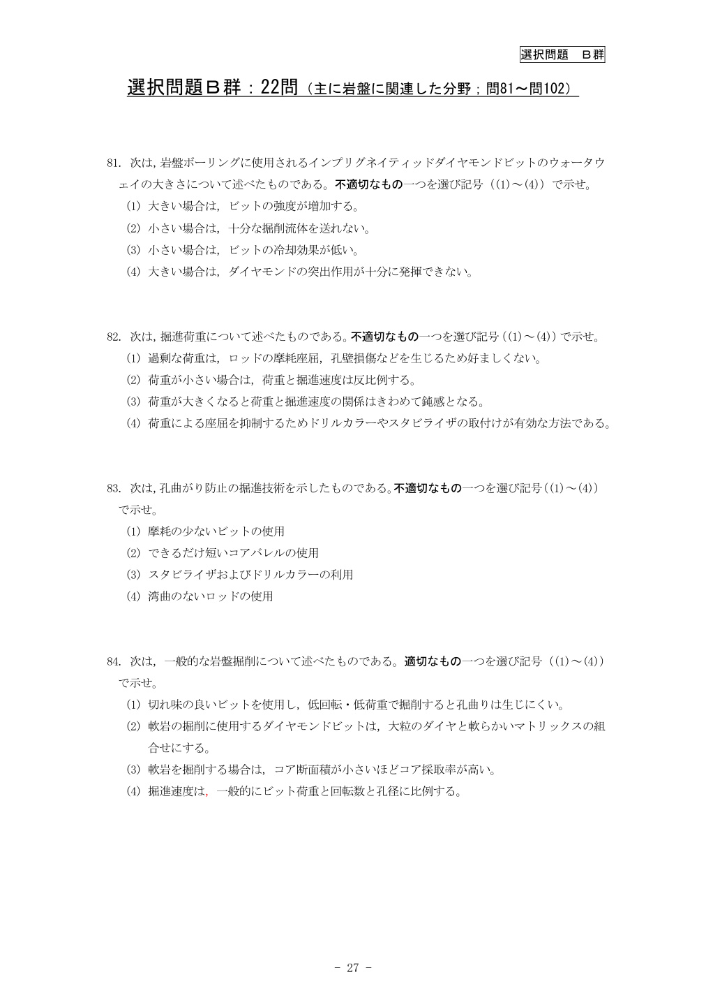
問82
B群（岩盤）
82. 次は，掘進荷重について述べたものである。不適切なもの一つを選び記号（(1)～(4)）で示せ。
(1) 過剰な荷重は，ロッドの摩耗座屈，孔壁損傷などを生じるため好ましくない。
(2) 荷重が小さい場合は，荷重と掘進速度は反比例する。
(3) 荷重が大きくなると荷重と掘進速度の関係はきわめて鈍感となる。
(4) 荷重による座屈を抑制するためドリルカラーやスタビライザの取付けが有効な方法である。
図表・イラスト確認用：PDF紙面（27ページ）を表示
問83
B群（岩盤）
83. 次は，孔曲がり防止の掘進技術を示したものである。不適切なもの一つを選び記号（(1)～(4)）
で示せ。
(1) 摩耗の少ないビットの使用
(2) できるだけ短いコアバレルの使用
(3) スタビライザおよびドリルカラーの利用
(4) 湾曲のないロッドの使用
図表・イラスト確認用：PDF紙面（27ページ）を表示
問84
B群（岩盤）
84. 次は，一般的な岩盤掘削について述べたものである。適切なもの一つを選び記号（(1)～(4)）
で示せ。
(1) 切れ味の良いビットを使用し，低回転・低荷重で掘削すると孔曲りは生じにくい。
(2) 軟岩の掘削に使用するダイヤモンドビットは，大粒のダイヤと軟らかいマトリックスの組
合せにする。
(3) 軟岩を掘削する場合は，コア断面積が小さいほどコア採取率が高い。
(4) 掘進速度は，一般的にビット荷重と回転数と孔径に比例する。
- 28 -
選択問題 Ｂ群
図表・イラスト確認用：PDF紙面（27ページ）を表示
問85
B群（岩盤）
85. 次は，保孔のためのケーシング抜管について述べたものである。不適切なもの一つを選び記号
（(1)～(4)）で示せ。
(1) 油圧ジャッキおよびスピンドルによる引揚げが基本である。
(2) 引揚げに際し，抜管すべきケーシングの全長を考慮して作業する必要がある。
(3) ハンマーによる打揚げが有効な場合がある。
(4) ハンマーによる打下げは全く効果がない。
図表・イラスト確認用：PDF紙面（28ページ）を表示
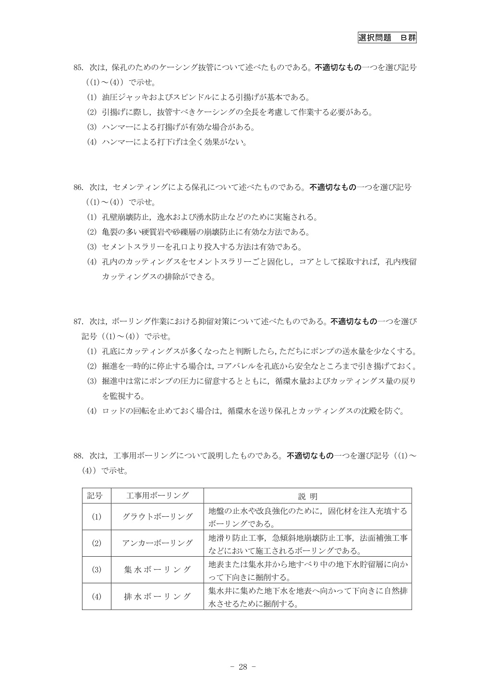
問86
B群（岩盤）
86. 次は，セメンティングによる保孔について述べたものである。不適切なもの一つを選び記号
（(1)～(4)）で示せ。
(1) 孔壁崩壊防止，逸水および湧水防止などのために実施される。
(2) 亀裂の多い硬質岩や砂礫層の崩壊防止に有効な方法である。
(3) セメントスラリーを孔口より投入する方法は有効である。
(4) 孔内のカッティングスをセメントスラリーごと固化し，コアとして採取すれば，孔内残留
カッティングスの排除ができる。
図表・イラスト確認用：PDF紙面（28ページ）を表示
問87
B群（岩盤）
87. 次は，ボーリング作業における抑留対策について述べたものである。不適切なもの一つを選び
記号（(1)～(4)）で示せ。
(1) 孔底にカッティングスが多くなったと判断したら，ただちにポンプの送水量を少なくする。
(2) 掘進を一時的に停止する場合は，コアバレルを孔底から安全なところまで引き揚げておく。
(3) 掘進中は常にポンプの圧力に留意するとともに，循環水量およびカッティングス量の戻り
を監視する。
(4) ロッドの回転を止めておく場合は，循環水を送り保孔とカッティングスの沈殿を防ぐ。
図表・イラスト確認用：PDF紙面（28ページ）を表示
問88
B群（岩盤）
88. 次は，工事用ボーリングについて説明したものである。不適切なもの一つを選び記号（(1)～
(4)）で示せ。
記号
工事用ボーリング
説 明
(1)
グラウトボーリング
地盤の止水や改良強化のために，固化材を注入充填する
ボーリングである。
(2)
アンカーボーリング
地滑り防止工事，急傾斜地崩壊防止工事，法面補強工事
などにおいて施工されるボーリングである。
(3)
集水ボーリング
地表または集水井から地すべり中の地下水貯留層に向か
って下向きに掘削する。
(4)
排水ボーリング
集水井に集めた地下水を地表へ向かって下向きに自然排
水させるために掘削する。
- 29 -
選択問題 Ｂ群
図表・イラスト確認用：PDF紙面（28ページ）を表示
問89
B群（岩盤）
89. 次は，計器設置用ボーリングについて述べたものである。不適切なもの一つを選び記号（(1)
～(4)）で示せ。
(1) 掘削時の泥水圧力を極力抑える。
(2) コアチューブ類の挿入・引揚げ作業は，速く行う。
(3) 孔内泥水が低下した時，直ちに孔口から泥水を補給する。
(4) 掘進を急ぐあまり，ビット荷重および回転速度を上げすぎないようにする。
図表・イラスト確認用：PDF紙面（29ページ）を表示
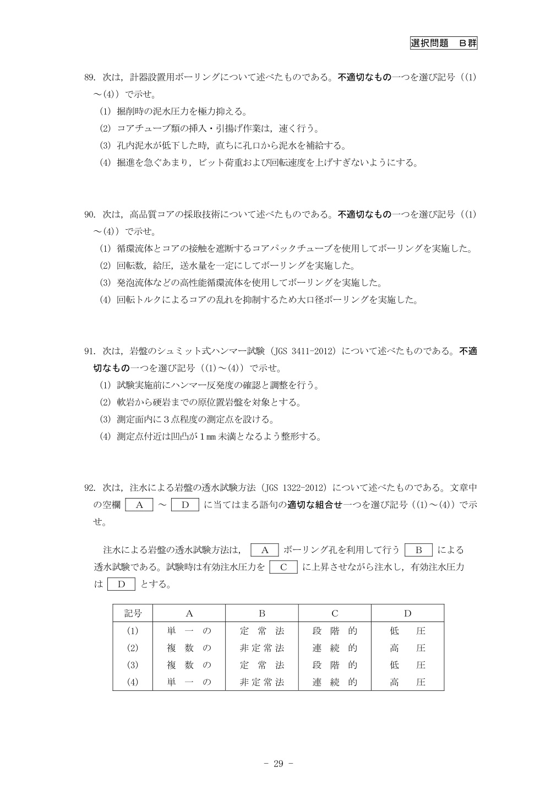
問90
B群（岩盤）
90. 次は，高品質コアの採取技術について述べたものである。不適切なもの一つを選び記号（(1)
～(4)）で示せ。
(1) 循環流体とコアの接触を遮断するコアパックチューブを使用してボーリングを実施した。
(2) 回転数，給圧，送水量を一定にしてボーリングを実施した。
(3) 発泡流体などの高性能循環流体を使用してボーリングを実施した。
(4) 回転トルクによるコアの乱れを抑制するため大口径ボーリングを実施した。
図表・イラスト確認用：PDF紙面（29ページ）を表示
問91
B群（岩盤）
91. 次は，岩盤のシュミット式ハンマー試験（JGS 3411-2012）について述べたものである。不適
切なもの一つを選び記号（(1)～(4)）で示せ。
(1) 試験実施前にハンマー反発度の確認と調整を行う。
(2) 軟岩から硬岩までの原位置岩盤を対象とする。
(3) 測定面内に３点程度の測定点を設ける。
(4) 測定点付近は凹凸が１mm 未満となるよう整形する。
図表・イラスト確認用：PDF紙面（29ページ）を表示
問92
B群（岩盤）
92. 次は，注水による岩盤の透水試験方法（JGS 1322-2012）について述べたものである。文章中
の空欄 Ａ ～ Ｄ に当てはまる語句の適切な組合せ一つを選び記号（(1)～(4)）で示
せ。
注水による岩盤の透水試験方法は， Ａ ボーリング孔を利用して行う Ｂ による
透水試験である。試験時は有効注水圧力を Ｃ に上昇させながら注水し，有効注水圧力
は Ｄ とする。
記号
Ａ
Ｂ
Ｃ
Ｄ
(1)
(2)
(3)
(4)
単
一
の
複
数
の
複
数
の
単
一
の
定
常
法
非定常法
定
常
法
非定常法
段
階
的
連
続
的
段
階
的
連
続
的
低
圧
高
圧
低
圧
高
圧
- 30 -
選択問題 Ｂ群
図表・イラスト確認用：PDF紙面（29ページ）を表示
問93
B群（岩盤）
93. 次は，崖錐堆積物の特徴について述べたものである。不適切なもの一つを選び記号（(1)～(4)）
で示せ。
(1) 未固結，ルーズで地下水を通しやすい。
(2) 基盤との境界は整合関係にある。
(3) 不均質で粘土層を挟在することがあり，粘土層がすべり面となって地すべりが起こること
がある。
(4) 崖錐堆積物の移動形態には，落石，斜面崩壊，地すべり，クリープなど様々なタイプがあ
る。
図表・イラスト確認用：PDF紙面（30ページ）を表示
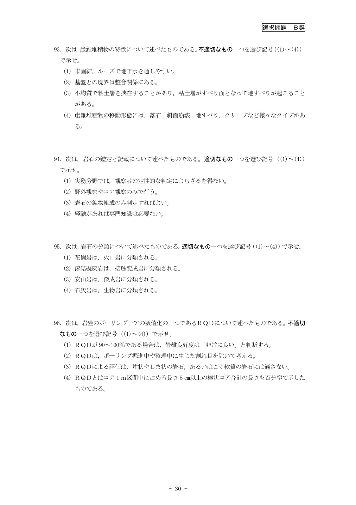
問94
B群（岩盤）
94. 次は，岩石の鑑定と記載について述べたものである。適切なもの一つを選び記号（(1)～(4)）
で示せ。
(1) 実務分野では，観察者の定性的な判定によらざるを得ない。
(2) 野外観察やコア観察のみで行う。
(3) 岩石の鉱物組成のみ判定すればよい。
(4) 経験があれば専門知識は必要ない。
図表・イラスト確認用：PDF紙面（30ページ）を表示
問95
B群（岩盤）
95. 次は，岩石の分類について述べたものである。適切なもの一つを選び記号（(1)～(4)）で示せ。
(1) 花崗岩は，火山岩に分類される。
(2) 溶結凝灰岩は，接触変成岩に分類される。
(3) 安山岩は，深成岩に分類される。
(4) 石灰岩は，生物岩に分類される。
図表・イラスト確認用：PDF紙面（30ページ）を表示
問96
B群（岩盤）
96. 次は，岩盤のボーリングコアの数値化の一つであるＲＱＤについて述べたものである。不適切
なもの一つを選び記号（(1)～(4)）で示せ。
(1) ＲＱＤが90～100％である場合は，岩盤良好度は「非常に良い」と判断する。
(2) ＲＱＤは，ボーリング掘進中や整理中に生じた割れ目を除いて考える。
(3) ＲＱＤによる評価は，片状やしま状の岩石，あるいはごく軟質の岩石には適さない。
(4) ＲＱＤとはコア１ｍ区間中に占める長さ5 ㎝以上の棒状コア合計の長さを百分率で示した
ものである。
- 31 -
選択問題 Ｂ群
図表・イラスト確認用：PDF紙面（30ページ）を表示
問97
B群（岩盤）
97. 下図は，露頭で確認された地質の模式図である。空欄ア～オに当てはまる適切な地質名の組合
せ一つを選び記号（(1)～(4)）で示せ。
記号
ア
イ
ウ
エ
オ
(1)
片 岩
頁 岩
砂 岩
石灰岩／ドロマイト
深成岩類
(2)
頁 岩
片 岩
砂 岩
深成岩類
石灰岩／ドロマイト
(3)
砂 岩
頁 岩
石灰岩／ドロマイト
片 岩
深成岩類
(4)
深成岩類
頁 岩
石灰岩／ドロマイト
砂 岩
片 岩
図表・イラスト確認用：PDF紙面（31ページ）を表示
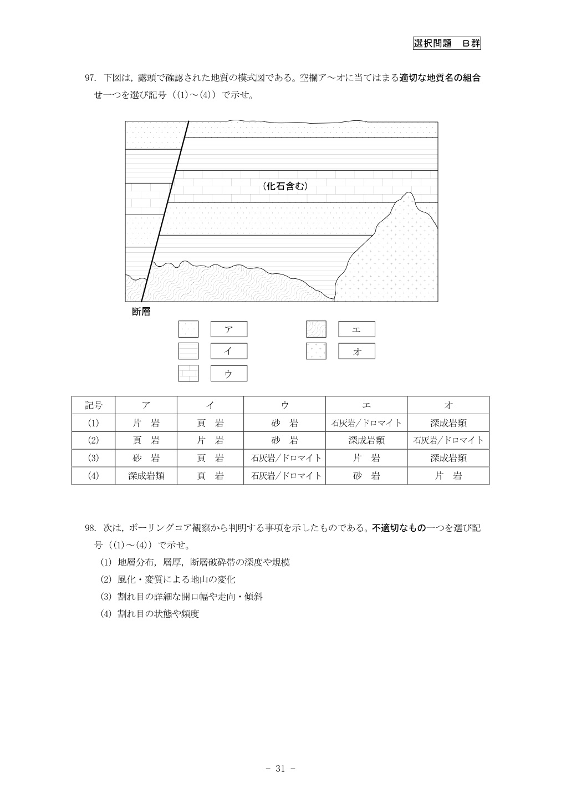
問98
B群（岩盤）
98. 次は，ボーリングコア観察から判明する事項を示したものである。不適切なもの一つを選び記
号（(1)～(4)）で示せ。
(1) 地層分布，層厚，断層破砕帯の深度や規模
(2) 風化・変質による地山の変化
(3) 割れ目の詳細な開口幅や走向・傾斜
(4) 割れ目の状態や頻度
エ
断層
イ
ウ
ア
オ
(化石含む)
- 32 -
選択問題 Ｂ群
図表・イラスト確認用：PDF紙面（31ページ）を表示
問99
B群（岩盤）
99. 下図は，層理面(ハッチ部)の走向を測る際の，クリノメータの置き方を示したものである。適
切なもの一つを選び記号（(1)～(4)）で示せ。
(1) Ａ
(2) Ｂ
(3) Ｃ
(4) Ｄ
図表・イラスト確認用：PDF紙面（32ページ）を表示
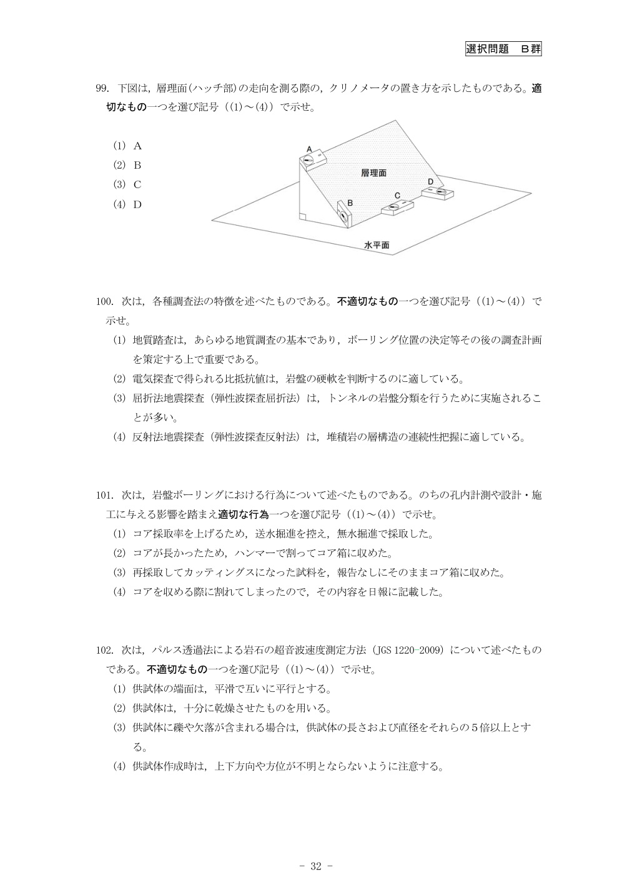
問100
B群（岩盤）
100. 次は，各種調査法の特徴を述べたものである。不適切なもの一つを選び記号（(1)～(4)）で
示せ。
(1) 地質踏査は，あらゆる地質調査の基本であり，ボーリング位置の決定等その後の調査計画
を策定する上で重要である。
(2) 電気探査で得られる比抵抗値は，岩盤の硬軟を判断するのに適している。
(3) 屈折法地震探査（弾性波探査屈折法）は，トンネルの岩盤分類を行うために実施されるこ
とが多い。
(4) 反射法地震探査（弾性波探査反射法）は，堆積岩の層構造の連続性把握に適している。
図表・イラスト確認用：PDF紙面（32ページ）を表示
問101
B群（岩盤）
101. 次は，岩盤ボーリングにおける行為について述べたものである。のちの孔内計測や設計・施
工に与える影響を踏まえ適切な行為一つを選び記号（(1)～(4)）で示せ。
(1) コア採取率を上げるため，送水掘進を控え，無水掘進で採取した。
(2) コアが長かったため，ハンマーで割ってコア箱に収めた。
(3) 再採取してカッティングスになった試料を，報告なしにそのままコア箱に収めた。
(4) コアを収める際に割れてしまったので，その内容を日報に記載した。
図表・イラスト確認用：PDF紙面（32ページ）を表示
問102
B群（岩盤）
102. 次は，パルス透過法による岩石の超音波速度測定方法（JGS 1220-2009）について述べたもの
である。不適切なもの一つを選び記号（(1)～(4)）で示せ。
(1) 供試体の端面は，平滑で互いに平行とする。
(2) 供試体は，十分に乾燥させたものを用いる。
(3) 供試体に礫や欠落が含まれる場合は，供試体の長さおよび直径をそれらの５倍以上とす
る。
(4) 供試体作成時は，上下方向や方位が不明とならないように注意する。
- 33 -
必須問題
Ⅶ．記述式問題 (2問)
以下の問いに対する解答を答案用紙（その２）に記述せよ。
第１問
ボーリング孔に使用する ｢ケーシングの機能（役割）｣ について３つ記述せよ。
第２問
土質調査ボーリングを実施するに当たり，運搬用トラック(2～3t)に積み込む資機材について，
下記に示す①～⑦の項目の中から3 つを選び，それぞれ必要と考える機材，器具，用具等を3 つ
記述せよ。
ただし、掘進長は50ｍ以下とし、仮設は平地でトラックによる搬入が可能とする。解答する
機材，器具，用具等については，ボーリング機械，エンジン，ボーリングポンプ，三又やぐら等，
標準貫入試験以外の原位置試験器具は除くものとする。
①三又等ボーリングやぐら付帯用具
②掘削用具
③揚降器具
④標準貫入試験器具
⑤サンプリング用具
⑥平坦地足場
⑦その他資機材・材料